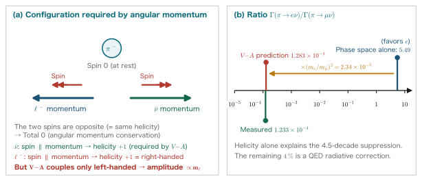
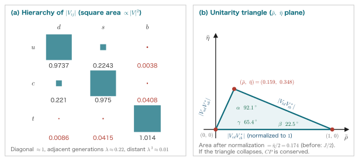
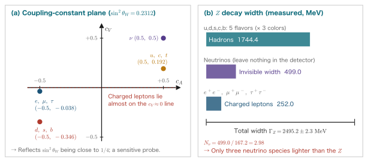

Chapter 12The Weak Interaction
Of the four forces, the weak interaction is the only one that changes the species (flavor) of a particle. The electromagnetic force and the strong force bind particles together to make atoms and atomic nuclei. Gravity makes stars. Destroying particles as such is something the strong and electromagnetic forces do as well ($\rho\to\pi\pi$, $\pi^0\to\gamma\gamma$). The weak force alone, however, builds nothing, and moreover it changes the species of the particle itself. It turns a $d$ quark into a $u$ quark and a muon into an electron. It turns a neutron into a proton. This act of “changing” is precisely the reason the Sun shines, the reason the elements are born, and the reason the designers of fusion reactors worry about the half-life of tritium.
The technical content of this chapter is concentrated in a single vertex factor.
That is all. Here $\gamma^\mu$ is a vector-type coupling, the same as in QED, and $\gamma^\mu\gamma^5$ is an axial-vector-type coupling; their difference $(1-\gamma^5)$ is called the V$-$A structure. From this single factor comes the muon lifetime $2.20\ \mu\mathrm{s}$, to three digits after the decimal point. Out comes the neutron lifetime $880\ \mathrm{s}$ (measured: $878\ \mathrm{s}$). Out comes the seemingly puzzling fact that $\pi\to e\nu$ is $10^4$ times less likely than $\pi\to\mu\nu$. In this chapter we calculate all of these. No intermediate steps are omitted.
And there is one more thing: this chapter contains the answer to the question “Why is the weak force weak?” To state the conclusion first, the weak force is not weak. The coupling constant $g_w$ is $2.2$ times larger than the electromagnetic $e$. It looks weak because the mediating $W$ boson has the enormous mass of $80\ \mathrm{GeV}$, so that the range of the force is only $2.5\times10^{-3}\ \mathrm{fm}$. That is, the weak force is not a “weak force” but a “short-range force”. And this procedure of “eliminating a heavy boson and replacing it with a contact interaction” is not something materials scientists are seeing for the first time. The screened Coulomb interaction in metals and the attraction in BCS theory have the same structure. In Section 12.8 we show this correspondence not as an analogy but in equations.
In the second half of the chapter we see that the weak interaction crosses quark generations (the Cabibbo angle, the CKM matrix), that neutral currents exist (the $Z$ boson), and that the electromagnetic and weak interactions are unified into a single structure, $SU(2)_L\times U(1)_Y$. When the partial widths of the $Z$ boson are calculated with paper and pencil, they agree with the measured values to 1%. Moreover, from the “invisible decay width” one can read off that there are exactly three species of neutrino in the world. This is one of the most brilliant conclusions that physics has reached.
The final Section 12.8 is devoted to the connection to materials science, the backbone of this book. The $\beta$ decay of tritium ($Q=18.6\ \mathrm{keV}$, half-life $12.32$ years) is the fuel cycle of a fusion reactor itself; the design guideline for $\beta$ batteries is set by the kinematic condition that “$\beta$ rays cannot knock atoms out of a semiconductor lattice”; and the composition of reduced-activation ferritic steel (avoiding Nb, Mo, and Ni and replacing them with Ta and W) is determined by the $\beta$-decay half-lives of the nuclides produced, a purely weak-interaction quantity. The $G_F$ that appears in particle physics textbooks transforms, just as it is, into the materials-selection table of a fusion reactor.
- The charged-current vertex $-\ii(g_w/2\sqrt2)\gamma^\mu(1-\gamma^5)$ and the $W$ propagator $-\ii g_{\mu\nu}/(q^2-m_W^2)$
- Contraction for $q^2\ll m_W^2$ $\to$ Fermi’s four-fermion contact interaction, with a numerical check of $G_F/\sqrt2 = g_w^2/(8m_W^2)$
- The $V-A$ structure, the chirality projection operator $P_L=(1-\gamma^5)/2$, and “the $W$ couples only to left-handed particles and right-handed antiparticles”
- The complete calculation of muon decay: the trace, three-body phase space, $\Gamma = G_F^2m_\mu^5/(192\pi^3)$, and the reproduction of the lifetime $2.20\ \mu\mathrm{s}$
- The Michel spectrum $\dd\Gamma/\dd x = \Gamma_0\cdot 2x^2(3-2x)$ and the spin asymmetry $\braket{\cos\theta}=-P_\mu/9$
- Neutron decay: $g_A/g_V=1.2754$, the origin of $1+3\lambda^2$, the narrowness of $Q=0.782\ \mathrm{MeV}$ and Sargent’s $Q^5$ rule, and the lifetime $880\ \mathrm{s}$
- Helicity suppression in pion decay: why the amplitude is proportional to $m_\ell$, and the numerical value $1.28\times10^{-4}$ of the ratio
- The Cabibbo angle, the GIM mechanism, the magnitudes of the CKM matrix elements, the Wolfenstein parametrization, and the unitarity triangle
- The $Z$ vertex $c_V=T_3-2Q\sin^2\theta_W$, $c_A=T_3$, the calculation of partial widths, and $N_\nu = 2.984$
- Electroweak unification: the left-handed doublets and right-handed singlets, $Y=2(Q-T_3)$, the mixing of $B$ and $W^3$, and the check of $m_W=m_Z\cos\theta_W$
- Connection to materials science: the tritium fuel cycle, the displacement-damage condition for $\beta$ batteries, reduced-activation steels, double $\beta$ decay, and the mathematical identity with screened Coulomb and BCS attraction
12.1 The Weak Interaction of Charged Leptons
12.1.1 Only one vertex
In QED there was only one vertex, “electron–electron–photon” (Chapter 10). The charged-current sector of the weak interaction is just as simple. For leptons there are only three vertices at which a $W^\pm$ joins a charged lepton and the neutrino of the same generation (one for each of the generations $e,\mu,\tau$), and all of their coupling constants are the same $g_w$.
Definition: Vertex factor for the charged current (leptons)
For $\ell = e,\mu,\tau$ and its accompanying neutrino $\nu_\ell$, the vertex factor for the coupling to the $W$ boson is
$$ \begin{equation} -\ii\,\frac{g_w}{2\sqrt2}\,\gamma^\mu\left(1-\gamma^5\right) \label{eq:12-vertex} \end{equation} $$Here $g_w$ is the weak coupling constant and $\gamma^5=\ii\gamma^0\gamma^1\gamma^2\gamma^3$. In all three generations $g_w$ takes the same value. This is called lepton universality.
In the hadron sector (quarks), this factor is further multiplied by a CKM matrix element $V_{ij}$ (Section 12.5).
Why? Where does the $2\sqrt2$ in the denominator come from?
The awkward number $2\sqrt2$ looks as if it were pulled out of thin air, but it is derived from the structure of $SU(2)_L$ in Section 12.7. Stating only the conclusion for now,
- $\sqrt2$ comes from the way the charged states are built, $W^\pm = (W^1\mp\ii W^2)/\sqrt2$.
- $2$ is the denominator of the left-handed projection operator $P_L=(1-\gamma^5)/2$. Since $(1-\gamma^5)=2P_L$, Eq. \eqref{eq:12-vertex} can equally be written as $-\ii(g_w/\sqrt2)\gamma^\mu P_L$.
In other words, the “bare” coupling constant $g_w$ is the $SU(2)_L$ gauge coupling itself, and $2\sqrt2$ is merely a by-product of the notation. The one thing to remember now is that $\gamma^\mu$ and $\gamma^\mu\gamma^5$ enter the weak interaction with equal weights.
12.1.2 The $V-A$ structure and chirality
Under a parity transformation $\gamma^\mu$ behaves as a vector (V), and $\gamma^\mu\gamma^5$ behaves as an axial vector (A) (Chapter 6, Section 6.1.2). Therefore Eq. \eqref{eq:12-vertex} is “the difference of V and A,” and is called the $V-A$ structure. That the coefficients of V and A are equal (their ratio is $-1$) is a fact determined by experiment.
Definition: Chirality projection operators
$$ \begin{equation} P_L \equiv \frac{1-\gamma^5}{2},\qquad P_R \equiv \frac{1+\gamma^5}{2} \label{eq:12-proj} \end{equation} $$These satisfy the conditions for projection operators, $P_L^2=P_L$, $P_R^2=P_R$, $P_LP_R=0$, and $P_L+P_R=1$. An arbitrary spinor is decomposed as $\psi = \psi_L + \psi_R$, with $\psi_{L,R}\equiv P_{L,R}\psi$. We call $\psi_L$ the left-handed component and $\psi_R$ the right-handed component.
The conjugate spinor requires care. Since $\gamma^5$ anticommutes with $\gamma^0$,
$$ \overline{\psi_L} = (P_L\psi)^\dagger\gamma^0 = \psi^\dagger P_L\gamma^0 = \psi^\dagger\gamma^0 P_R = \bar\psi P_R $$that is, the bar of a left-handed spinor is written with the right-handed projection.
Derivation: The $W$ couples only to left-handed particles and right-handed antiparticles
Step 1: Rewrite the vertex with a projection operator. Using $(1-\gamma^5) = 2P_L$ in Eq. \eqref{eq:12-vertex}, we get
$$ -\ii\frac{g_w}{2\sqrt2}\gamma^\mu(1-\gamma^5) = -\ii\frac{g_w}{\sqrt2}\gamma^\mu P_L $$Step 2: Sandwich it into a current. Since the vertex always appears in the form $\bar u_1(\cdots)u_2$, the current is
$$ j^\mu = \bar u_1\gamma^\mu P_L u_2 $$Step 3: Split $P_L$ in two. Use $P_L^2=P_L$ and $\gamma^\mu P_L = P_R\gamma^\mu$ (because $\gamma^5$ anticommutes with $\gamma^\mu$):
$$ \bar u_1\gamma^\mu P_L u_2 = \bar u_1\gamma^\mu P_L P_L u_2 = \bar u_1 P_R\gamma^\mu P_L u_2 = \overline{(P_L u_1)}\,\gamma^\mu\,(P_L u_2) $$In the last equality we used $\bar u P_R = \overline{P_L u}$.
Step 4: Conclusion. Only the left-handed components $P_Lu_1, P_Lu_2$ of $u_1,u_2$ appear in the current. That is, the $W$ boson couples only to particles with left-handed chirality. The right-handed component $P_Ru$ does not couple to the $W$ at all.
Step 5: The case of antiparticles. For the spinor $v$ of an antiparticle, it appears not in the form $\bar v\gamma^\mu P_L$ but in the form $\gamma^\mu P_L v$. The same manipulation leaves $P_L v$, but the correspondence between the chirality projection and the helicity of a $v$ spinor is opposite to that of a particle (Chapter 9, Section 9.5.3). As a result, the $W$ couples only to antiparticles of right-handed helicity.
Caution: Chirality and helicity are different things
This is the point at which beginners are most confused, so we make it clear.
- Helicity: $h=\bm{\Sigma}\cdot\hat{\pp}$, that is, the projection of the spin onto the direction of motion. It is measurable, but for a massive particle it depends on the observer (it flips if one overtakes the particle).
- Chirality: the eigenvalue of $\gamma^5$. It is Lorentz invariant, but for a massive particle it is not conserved (the mass term of the Dirac equation, $m\bar\psi\psi = m(\bar\psi_L\psi_R+\bar\psi_R\psi_L)$, mixes left and right).
The two coincide only in the limit $m=0$ (or $E\gg m$), in which case $P_L u \to$ a state of helicity $-1$. In general, the left-handed chirality state of a particle of momentum $p$ and mass $m$ is the mixture
$$ \text{(amplitude of helicity }-1\text{)} \propto \sqrt{\frac{E+\abs{\pp}}{2E}},\qquad \text{(amplitude of helicity }+1\text{)} \propto \sqrt{\frac{E-\abs{\pp}}{2E}}\approx\frac{m}{2E} \quad (E\gg m) $$The amplitude of the “wrong helicity” is suppressed by $m/2E$—this one line is the whole story of pion decay in Section 12.4.
12.1.3 The $W$ propagator and the low-energy limit
The propagator of a vector boson of mass $m_W$, in unitary gauge, is
$$ \begin{equation} \frac{-\ii\left(g_{\mu\nu} - q_\mu q_\nu/m_W^2\right)}{q^2 - m_W^2} \label{eq:12-wprop} \end{equation} $$Compared with the photon propagator $-\ii g_{\mu\nu}/q^2$, (i) $-m_W^2$ is added to the denominator, and (ii) an extra term $q_\mu q_\nu/m_W^2$ is attached to the numerator. The term (ii) originates from the longitudinal polarization (a massive vector field has three polarizations).
Math Note: Why the $q_\mu q_\nu$ term drops out
In the processes treated in this chapter, the $q_\mu q_\nu$ term always drops out. The reason is that this term is contracted with the currents at both ends into the form $q_\mu j^\mu$, and by momentum conservation $q = p_1-p_3$ and the Dirac equation,
$$ q_\mu\,\bar u_3\gamma^\mu(1-\gamma^5)u_1 = \bar u_3(\slashed{p}_1-\slashed{p}_3)(1-\gamma^5)u_1 = \bar u_3\left[m_1(1+\gamma^5) - m_3(1-\gamma^5)\right]u_1 $$(we used $\slashed{p}_1u_1=m_1u_1$, $\bar u_3\slashed{p}_3 = m_3\bar u_3$, and the anticommutation of $\gamma^5$). Therefore the contribution of the $q_\mu q_\nu$ term is of order $m_\ell m_{\ell'}/m_W^2$. At most it is $m_\tau^2/m_W^2 = (1.777/80.4)^2 = 4.9\times10^{-4}$. At the precision of this chapter it can be neglected entirely.
Derivation: The Fermi four-fermion interaction and $G_F$
Step 1: Write the $W$-exchange amplitude. Connect the two vertices $\mu^-\to \nu_\mu + W^-$ and $W^-\to e^-+\bar\nu_e$ with the propagator. Following the Feynman rules (arranging the factors in the direction against the arrows),
$$ -\ii\mathcal{M} = \left[-\ii\frac{g_w}{2\sqrt2}\bar u(\nu_\mu)\gamma^\mu(1-\gamma^5)u(\mu)\right] \left[\frac{-\ii g_{\mu\nu}}{q^2-m_W^2}\right] \left[-\ii\frac{g_w}{2\sqrt2}\bar u(e)\gamma^\nu(1-\gamma^5)v(\bar\nu_e)\right] $$Step 2: Organize the factors of $\ii$. Count $(-\ii)^2\times(-\ii)$ carefully. $(-\ii)(-\ii)=-1$, and multiplying this by $(-\ii)$ gives $+\ii$. Hence
$$ -\ii\mathcal{M} = \ii\,\frac{g_w^2}{8}\,\frac{1}{q^2-m_W^2} \left[\bar u(\nu_\mu)\gamma^\mu(1-\gamma^5)u(\mu)\right] \left[\bar u(e)\gamma_\mu(1-\gamma^5)v(\bar\nu_e)\right] $$Here we used $(2\sqrt2)^2 = 8$ and lowered the index with $g_{\mu\nu}$.
Step 3: Take the low-energy limit. In muon decay, the momentum carried by the $W$ satisfies $q^2 \lesssim m_\mu^2 = (0.106\ \mathrm{GeV})^2$ at most. On the other hand, $m_W^2 = (80.4\ \mathrm{GeV})^2$. The ratio is
$$ \frac{q^2}{m_W^2} \lesssim \left(\frac{0.106}{80.4}\right)^2 = 1.7\times10^{-6} $$Therefore we may drop $q^2$ in the denominator and set $q^2-m_W^2\to -m_W^2$. The error is of order $10^{-6}$.
Step 4: Read off the Fermi constant. $\mathcal{M}$ becomes
$$ \mathcal{M} = \frac{g_w^2}{8m_W^2} \left[\bar u(\nu_\mu)\gamma^\mu(1-\gamma^5)u(\mu)\right] \left[\bar u(e)\gamma_\mu(1-\gamma^5)v(\bar\nu_e)\right] $$The propagator has turned into a constant. This means that the two currents touch at the same point. The four-fermion contact interaction that Fermi postulated in 1934 has been reproduced as the low-energy limit of $W$ exchange. Define the Fermi constant $G_F$ by
and the amplitude can be written as
$$ \begin{equation} \mathcal{M} = \frac{G_F}{\sqrt2} \left[\bar u(\nu_\mu)\gamma^\mu(1-\gamma^5)u(\mu)\right] \left[\bar u(e)\gamma_\mu(1-\gamma^5)v(\bar\nu_e)\right] \label{eq:12-fermi-amp} \end{equation} $$The $\sqrt2$ is there only because of the historical habit of writing Fermi theory in this form; it has no physical meaning.
12.1.4 Checking $G_F$ numerically
Example: Finding $g_w$ from $G_F$ and $m_W$
Insert the experimental values $G_F = 1.1663788\times10^{-5}\ \mathrm{GeV^{-2}}$ (determined from the muon lifetime; see Section 12.2) and $m_W = 80.377\ \mathrm{GeV}$ into Eq. \eqref{eq:12-gf} to find $g_w$.
$$ g_w^2 = \frac{8m_W^2G_F}{\sqrt2} = \frac{8\times(80.377)^2\times1.1663788\times10^{-5}}{1.4142136} $$First, $m_W^2 = 6460.46\ \mathrm{GeV^2}$ and $8m_W^2 = 51683.7\ \mathrm{GeV^2}$. Multiplying by $G_F$ gives $0.602827$, and dividing by $\sqrt2$,
$$ g_w^2 = 0.42626,\qquad g_w = 0.6529 $$Comparing with the QED coupling $e=\sqrt{4\pi\alpha}=0.30282$,
$$ \frac{g_w}{e} = \frac{0.6529}{0.30282} = 2.156 $$The coupling constant of the weak interaction is 2.16 times larger than that of the electromagnetic interaction. Constructing the quantity corresponding to the fine-structure constant,
$$ \alpha_w \equiv \frac{g_w^2}{4\pi} = \frac{0.42626}{12.5664} = 0.03392 = \frac{1}{29.5} $$Against $\alpha=1/137.0$, we have $\alpha_w=1/29.5$, a full $4.65$ times larger. As far as the coupling strength is concerned, the name “weak interaction” is a complete misnomer.
Physical Meaning: So what is “weak”? — The range
According to Yukawa’s theory (Chapter 3, Section 3.1.3), the range of a force mediated by a particle of mass $m$ is $R=\hbar/(mc)=1/m$. For the $W$ boson,
$$ R_W = \frac{\hbar c}{m_Wc^2} = \frac{197.327\ \mathrm{MeV\,fm}}{80377\ \mathrm{MeV}} = 2.455\times10^{-3}\ \mathrm{fm} = 2.455\times10^{-18}\ \mathrm{m} $$This is $1/342$ of the proton radius $0.84\ \mathrm{fm}$ and $1/(4\times10^7)$ of the size of an atom, $10^5\ \mathrm{fm}$. At the distance $\sim1\ \mathrm{fm}$ at which nucleons “touch” each other, the exponential factor of the Yukawa potential is
$$ \ee^{-m_W r}\Big|_{r=1\,\mathrm{fm}} = \ee^{-1/0.002455} = \ee^{-407.3} \approx 10^{-176.9} $$a value that is effectively nil by the standards of any everyday physical quantity. The weak interaction looks weak not because the coupling is small, but because of this exponential factor. In Section 12.8.5 (e), we pin down this point quantitatively.
Caution: Consistency with $g_w = e/\sin\theta_W$
In Section 12.7 we will derive the relation $g_w = e/\sin\theta_W$. Using $\sin^2\theta_W = 0.2312$,
$$ \frac{e}{\sin\theta_W} = \frac{0.30282}{\sqrt{0.2312}} = \frac{0.30282}{0.48083} = 0.6298 $$This differs by 3.5% from the $0.6529$ found above. This is not a calculation error; there are two reasons.
- The running of $\alpha$ (Chapter 10, Section 10.6.4). $\alpha$ increases with $q^2$, and at $q^2=m_Z^2$ we have $\hat\alpha(m_Z)=1/127.95$ (in the $\overline{\rm MS}$ definition; the definition differs from the on-shell value $\alpha^{-1}(m_Z)=128.95$ derived in Chapter 10, Section 10.6.4). The $\sin^2\theta_W=0.2312$ used above is the $\overline{\rm MS}$ value, so it is consistent to use $\hat\alpha(m_Z)$ for $\alpha$ as well, paired with it. Then $e=0.31339$ and $e/\sin\theta_W = 0.31339/0.48083 = 0.6518$, and the discrepancy from $0.6529$ shrinks to $0.17\ \%$ (the same precision as the prediction of $m_W$ in Section 12.7.4).
- The radiative correction $\Delta r$. The relation among $G_F$ and $(\alpha, m_W, m_Z)$ receives a one-loop correction $\Delta r\approx0.036$ (the value in the convention that pairs $\alpha(0)$ with the on-shell $\sin^2\theta_W=1-m_W^2/m_Z^2=0.2231$; then $e/\sin\theta_W=0.30282/0.47233=0.6411$, and $(0.6529/0.6411)^2=1.037=1/(1-\Delta r)$). Including this, the two agree to the experimental precision ($10^{-4}$).
In this chapter, we regard agreement at the 1–3% level from tree-level formulas as a “match.” When higher precision is required, one must always check which definition of $\sin^2\theta_W$ is being used (the on-shell $0.2231$ or the $\overline{\rm MS}$ $0.2312$).
12.2 Muon Decay — The Complete Calculation
The decay of the muon, $\mu^-\to e^-\bar\nu_e\nu_\mu$, is an ideal laboratory for the weak interaction. Only four leptons are involved, and the strong interaction does not enter at all. Moreover, the mass of the final-state electron is small, $m_e/m_\mu = 1/207$, and can be neglected. Therefore this decay rate is completely determined by $G_F$ and $m_\mu$ alone. In this section we carry the calculation through to the end and reproduce the lifetime $2.20\ \mu\mathrm{s}$.
12.2.1 Amplitude and momentum assignment
We assign the momenta as follows.
$$ \mu^-(p) \longrightarrow e^-(p') + \bar\nu_e(k') + \nu_\mu(k) $$The amplitude is Eq. \eqref{eq:12-fermi-amp}. We approximate $m_e=0$ (corrected later) and set $m_\nu=0$.
12.2.2 Trace calculation of $\abs{\mathcal{M}}^2$
Derivation: The spin-averaged $\abs{\mathcal{M}}^2$
Step 1: Split into two traces. Form $\abs{\mathcal{M}}^2 = \mathcal{M}\mathcal{M}^*$, average over the two spin states of the initial muon, and sum over the final-state spins. Since the amplitude is a product of two currents, the spin sum also splits into a product of two traces:
$$ \braket{\abs{\mathcal{M}}^2} = \frac{G_F^2}{2}\cdot\frac12\, T_1^{\mu\nu}\,T_{2\,\mu\nu} $$ $$ T_1^{\mu\nu} = \Tr\!\left[\slashed{k}\,\gamma^\mu(1-\gamma^5)\,(\slashed{p}+m_\mu)\,\gamma^\nu(1-\gamma^5)\right], \qquad T_{2}^{\mu\nu} = \Tr\!\left[\slashed{p}'\,\gamma^\mu(1-\gamma^5)\,\slashed{k}'\,\gamma^\nu(1-\gamma^5)\right] $$The coefficient $G_F^2/2$ is $(G_F/\sqrt2)^2$, and $1/2$ is the average over the muon spin.
Step 2: The mass term drops out. The term in $T_1^{\mu\nu}$ proportional to $m_\mu$ is a trace of three (an odd number of) $\gamma$ matrices, so it vanishes. Hence we may replace $\slashed{p}+m_\mu \to \slashed{p}$. This is why the mass of the muon does not enter the spin-averaged decay rate through the spinors ($m_\mu$ enters only through the kinematics).
Step 3: Combine the $(1-\gamma^5)$ factors. Since $\gamma^5$ anticommutes with $\gamma^\mu$, we have $(1-\gamma^5)\slashed{a} = \slashed{a}(1+\gamma^5)$, and we use $(1+\gamma^5)(1-\gamma^5)=0$ and $(1-\gamma^5)^2 = 2(1-\gamma^5)$. Passing through the middle of $T_1$, we obtain
$$ T_1^{\mu\nu} = 2\Tr\!\left[\slashed{k}\gamma^\mu\slashed{p}\gamma^\nu(1-\gamma^5)\right] $$Step 4: Use the standard trace formulas. Applying the formulas collected in Appendix C,
$$ \Tr[\gamma^\alpha\gamma^\mu\gamma^\beta\gamma^\nu] = 4(g^{\alpha\mu}g^{\beta\nu}-g^{\alpha\beta}g^{\mu\nu}+g^{\alpha\nu}g^{\mu\beta}), \qquad \Tr[\gamma^\alpha\gamma^\mu\gamma^\beta\gamma^\nu\gamma^5] = -4\ii\,\epsilon^{\alpha\mu\beta\nu} $$we obtain
$$ T_1^{\mu\nu} = 8\left[k^\mu p^\nu + k^\nu p^\mu - g^{\mu\nu}(k\cdot p) + \ii\epsilon^{\alpha\mu\beta\nu}k_\alpha p_\beta\right] $$Similarly,
$$ T_2^{\mu\nu} = 8\left[p'^\mu k'^\nu + p'^\nu k'^\mu - g^{\mu\nu}(p'\cdot k') + \ii\epsilon^{\gamma\mu\delta\nu}p'_\gamma k'_\delta\right] $$Step 5: Contract. Only the symmetric parts with each other and the antisymmetric parts with each other survive. The contraction of the symmetric parts is
$$ 64\left[2(k\cdot p')(p\cdot k') + 2(k\cdot k')(p\cdot p') - 2(k\cdot p)(p'\cdot k') - 2(k\cdot p)(p'\cdot k') + 4(k\cdot p)(p'\cdot k')\right] $$which simplifies to $128\left[(k\cdot p')(p\cdot k') + (k\cdot k')(p\cdot p')\right]$. The contraction of the antisymmetric parts (the $\epsilon$ terms with each other) uses the identity
$$ \epsilon^{\alpha\mu\beta\nu}\epsilon_{\gamma\mu\delta\nu} = -2\left(\delta^\alpha_\gamma\delta^\beta_\delta - \delta^\alpha_\delta\delta^\beta_\gamma\right) $$and gives $128\left[(k\cdot p')(p\cdot k') - (k\cdot k')(p\cdot p')\right]$. Adding the two, the $(k\cdot k')(p\cdot p')$ terms cancel neatly, leaving
$$ T_1^{\mu\nu}T_{2\,\mu\nu} = 256\,(k\cdot p')(p\cdot k') $$Step 6: Put it together.
$$ \begin{equation} \braket{\abs{\mathcal{M}}^2} = \frac{G_F^2}{2}\cdot\frac12\cdot 256\,(k\cdot p')(p\cdot k') = 64\,G_F^2\,(p\cdot k')(p'\cdot k) \label{eq:12-mu-msq} \end{equation} $$Physical Meaning: Why the combination $(p\cdot k')(p'\cdot k)$?
In Eq. \eqref{eq:12-mu-msq} the pairs are “$\mu^-$ and $\bar\nu_e$” and “$e^-$ and $\nu_\mu$.” This looks odd at first sight, but it is a direct consequence of the $V-A$ structure.
In the $V-A$ theory, the $\mu^-$ and the $\nu_\mu$ enter the same current, and the $e^-$ and the $\bar\nu_e$ enter the same current (see how $\mathcal{M}$ is written). In $\abs{\mathcal{M}}^2$, however, the partners within the currents are interchanged. This is an example of an identity called the Fierz transformation, and it follows from the fact that the $V-A\times V-A$ structure does not change its form under a Fierz transformation. If $V+A$ were mixed in, this beautiful form would be destroyed. Therefore the very simplicity of \eqref{eq:12-mu-msq} is evidence for $V-A$.
12.2.3 Integration over the three-body phase space
Derivation: $\Gamma = G_F^2m_\mu^5/(192\pi^3)$
Step 1: Write down the decay-rate formula. The three-body decay formula of Appendix B:
$$ \Gamma = \frac{1}{2m_\mu}\int \braket{\abs{\mathcal{M}}^2}\, (2\pi)^4\delta^4(p-p'-k-k')\, \frac{\dd^3p'}{(2\pi)^32E'}\frac{\dd^3k}{(2\pi)^32E_k}\frac{\dd^3k'}{(2\pi)^32E_{k'}} $$Counting the powers of $(2\pi)$, we have $(2\pi)^4/(2\pi)^9 = 1/(2\pi)^5$.
Step 2: First integrate over the two neutrinos. Let $q \equiv k+k' = p-p'$. Since the neutrino angles are not measured, we integrate over them first. What we need is
$$ I^{\alpha\beta}(q) \equiv \int \frac{\dd^3k}{2E_k}\frac{\dd^3k'}{2E_{k'}}\,\delta^4(q-k-k')\,k^\alpha k'^\beta $$Since $I^{\alpha\beta}$ is a function of $q$ only and its indices can be built only from $q^\alpha q^\beta$ and $g^{\alpha\beta}$, we can write
$$ I^{\alpha\beta} = A\,q^2g^{\alpha\beta} + B\,q^\alpha q^\beta $$Contracting with $g_{\alpha\beta}$ and with $q_\alpha q_\beta$ to make two equations, and using $k^2=k'^2=0$ and $2k\cdot k'=q^2$, we obtain $A=\pi/24$ and $B=\pi/12$. That is,
$$ \begin{equation} I^{\alpha\beta} = \frac{\pi}{24}\left(q^2g^{\alpha\beta}+2q^\alpha q^\beta\right) \label{eq:12-Iab} \end{equation} $$Step 3: Substitute $\abs{\mathcal{M}}^2$. Equation \eqref{eq:12-mu-msq} can be written as $64G_F^2\,p_\alpha p'_\beta\, k'^\alpha k^\beta$ (note the positions of the indices). Hence
$$ \int\frac{\dd^3k\,\dd^3k'}{4E_kE_{k'}}\delta^4(\cdots)\braket{\abs{\mathcal{M}}^2} = 64G_F^2\,p_\alpha p'_\beta\,\frac{\pi}{24}\left(q^2g^{\alpha\beta}+2q^\alpha q^\beta\right) = \frac{8\pi G_F^2}{3}\left[q^2(p\cdot p') + 2(p\cdot q)(p'\cdot q)\right] $$Step 4: Write it out in the muon rest frame. We have $p=(m_\mu,\bm{0})$ and $p'=(E',\pp')$, and $m_e=0$ gives $\abs{\pp'}=E'$. Then
$$ p\cdot p' = m_\mu E',\qquad q^2 = (p-p')^2 = m_\mu^2 - 2m_\mu E',\qquad p\cdot q = m_\mu^2 - m_\mu E',\qquad p'\cdot q = m_\mu E' $$The expression in the square brackets is
$$ (m_\mu^2-2m_\mu E')(m_\mu E') + 2(m_\mu^2-m_\mu E')(m_\mu E') = m_\mu E'\left[3m_\mu^2 - 4m_\mu E'\right] = m_\mu^2 E'\left(3m_\mu-4E'\right) $$Step 5: Integrate over the electron momentum. Since $\dd^3p' = 4\pi E'^2\dd E'$ (for $m_e=0$),
$$ \Gamma = \frac{1}{2m_\mu}\frac{1}{(2\pi)^5}\int_0^{m_\mu/2}\frac{4\pi E'^2\dd E'}{2E'}\cdot \frac{8\pi G_F^2}{3}m_\mu^2E'(3m_\mu-4E') $$Note that the upper limit of the integral is $m_\mu/2$. The electron energy is maximal when the two neutrinos fly off together in the same direction, and then $E'_{\max}=m_\mu/2$. Simplifying the coefficients,
$$ \Gamma = \frac{1}{2m_\mu}\frac{1}{32\pi^5}\cdot\frac{16\pi^2G_F^2}{3}m_\mu^2 \int_0^{m_\mu/2}E'^2(3m_\mu-4E')\,\dd E' $$Step 6: The remaining integral.
$$ \int_0^{m_\mu/2}\left(3m_\mu E'^2 - 4E'^3\right)\dd E' = 3m_\mu\frac{(m_\mu/2)^3}{3} - 4\frac{(m_\mu/2)^4}{4} = \frac{m_\mu^4}{8}-\frac{m_\mu^4}{16} = \frac{m_\mu^4}{16} $$Step 7: Put it together.
$$ \Gamma = \frac{1}{2m_\mu}\cdot\frac{1}{32\pi^5}\cdot\frac{16\pi^2G_F^2m_\mu^2}{3}\cdot\frac{m_\mu^4}{16} = \frac{G_F^2m_\mu^5}{2\cdot32\cdot3\,\pi^3} $$The denominator is $2\times32\times3=192$. That is,
12.2.4 Numerical value — 2.20 microseconds
Example: Computing the muon lifetime numerically
(1) A naive estimate. $G_F=1.1663788\times10^{-5}\ \mathrm{GeV^{-2}}$, $m_\mu = 0.1056584\ \mathrm{GeV}$.
$$ m_\mu^5 = (0.1056584)^5 = 1.31680\times10^{-5}\ \mathrm{GeV^5},\qquad G_F^2 = 1.360439\times10^{-10}\ \mathrm{GeV^{-4}} $$ $$ 192\pi^3 = 192\times31.00628 = 5953.2 $$ $$ \Gamma = \frac{1.360439\times10^{-10}\times1.31680\times10^{-5}}{5953.2} = \frac{1.79143\times10^{-15}}{5953.2} = 3.00918\times10^{-19}\ \mathrm{GeV} $$Converting to a lifetime with $\hbar = 6.582120\times10^{-25}\ \mathrm{GeV\,s}$,
$$ \tau = \frac{\hbar}{\Gamma} = \frac{6.582120\times10^{-25}}{3.00918\times10^{-19}} = 2.1874\ \mu\mathrm{s} $$This is $0.44\ \%$ smaller than the measured value $\tau_\mu = 2.196981\ \mu\mathrm{s}$.
(2) Including the corrections. The $0.44\ \%$ discrepancy consists of two effects.
- Phase-space correction due to the electron mass: with $x\equiv (m_e/m_\mu)^2 = 2.339\times10^{-5}$,
- QED radiative correction (contributions of $\mu\to e\nu\bar\nu\gamma$ and the virtual photon):
Multiplying the two gives $0.9998129\times0.995796 = 0.995610$. The corrected decay rate and lifetime are
$$ \Gamma = 3.00918\times10^{-19}\times0.995610 = 2.99597\times10^{-19}\ \mathrm{GeV}, \qquad \tau = \frac{6.582120\times10^{-25}}{2.99597\times10^{-19}} = 2.19699\ \mu\mathrm{s} $$The measured value is $2.196981\ \mu\mathrm{s}$. The two agree to five significant figures (relative difference $4\times10^{-6}$). In particle physics, there are not many calculations that reach this precision starting from a single coupling constant and a single mass.
Caution: Isn’t this agreement “circular reasoning”?
A sharp reader will have noticed it. The value of $G_F$ is determined from this very muon lifetime. Is the agreement above, then, merely a circular argument that confirms a definition?
Half of that is true. Indeed, the PDG gives $G_F$ as “a quantity defined from the muon lifetime.” But the other half is what is essential: namely, whether the $G_F$ fixed in this way correctly predicts completely different processes. Table 12.1 shows the answer.
| Process | Formula | Prediction | Measured | Deviation |
|---|---|---|---|---|
| $\mu^-\to e^-\bar\nu_e\nu_\mu$ | $G_F^2m_\mu^5/192\pi^3$ | $2.1970\ \mu\mathrm{s}$ | $2.1970\ \mu\mathrm{s}$ | (definition) |
| $\tau^-\to$ anything | the above with $m_\mu\to m_\tau$, $\div\,B_e$ | $291.1\ \mathrm{fs}$ | $290.3\ \mathrm{fs}$ | $0.26\%$ |
| $n\to pe^-\bar\nu_e$ | Eq. \eqref{eq:12-ntau} of Section 12.3 | $880\ \mathrm{s}$ | $878.4\ \mathrm{s}$ | $0.2\%$ |
| $\pi^-\to e^-\bar\nu_e\,/\,\pi^-\to\mu^-\bar\nu_\mu$ | Eq. \eqref{eq:12-pi-ratio} of Section 12.4 | $1.283\times10^{-4}$ | $1.233\times10^{-4}$ | $4\%$ (radiative correction) |
| $\Gamma(Z\to e^+e^-)$ | Eq. \eqref{eq:12-zwidth} of Section 12.6 | $83.4\ \mathrm{MeV}$ | $83.98\ \mathrm{MeV}$ | $0.7\%$ |
| $m_W$ | $m_W^2 = \pi\alpha/(\sqrt2G_F\sin^2\theta_W)$ | $80.24\ \mathrm{GeV}$ | $80.377\ \mathrm{GeV}$ | $0.17\%$ |
Example: The $\tau$ lepton lifetime — a test of the $m^5$ law
The $\tau$ lepton is $17$ times heavier than the muon. If the $V-A$ theory and lepton universality are correct, the same formula \eqref{eq:12-mudecay} should be usable with the replacement $m_\mu\to m_\tau$. However, the $\tau$ lepton decays not only into lepton pairs but also into hadrons, so the total decay rate must be divided by the branching ratio “$B_e = 0.1782$ for $\tau\to e\nu\bar\nu$.” Writing it with ratios alone, without using $G_F$, we have
$$ \frac{\tau_\tau}{\tau_\mu} = B_e\left(\frac{m_\mu}{m_\tau}\right)^5 = 0.1782\times\left(\frac{105.658}{1776.86}\right)^5 = 0.1782\times(0.0594636)^5 $$Since $(0.0594636)^5 = 7.434\times10^{-7}$,
$$ \frac{\tau_\tau}{\tau_\mu} = 1.3248\times10^{-7},\qquad \tau_\tau = 1.3248\times10^{-7}\times2.19698\times10^{-6}\ \mathrm{s} = 2.911\times10^{-13}\ \mathrm{s} $$That is, $291.1\ \mathrm{fs}$. The measured value is $290.3\ \mathrm{fs}$. The agreement is $0.26\ \%$. Moreover, we have used neither $G_F$ nor $\hbar$; all we used were a mass ratio and a branching ratio. This single line shows that the $m^5$ law holds over the wide range $17^5 = 1.4\times10^6$.
12.2.5 The Michel spectrum
If we stop the integration just before Step 5 of the derivation, we obtain the electron energy distribution. We introduce the dimensionless variable
$$ x \equiv \frac{2E'}{m_\mu} = \frac{E'}{E'_{\max}}\in[0,1] $$(neglecting $m_e$). From the integrand of Step 5,
$$ \frac{\dd\Gamma}{\dd E'} = \frac{G_F^2}{12\pi^3}m_\mu E'^2\left(3m_\mu-4E'\right) $$Substituting $E'=xm_\mu/2$ and $\dd E' = (m_\mu/2)\dd x$, we obtain
This is called the Michel spectrum. One can check the normalization $\int_0^1 2x^2(3-2x)\dd x = 2[x^3-x^4/2]_0^1 = 1$. The mean value is
$$ \braket{x} = \int_0^1 x\cdot 2x^2(3-2x)\dd x = 2\left[\frac34-\frac25\right] = 0.7 \quad\Longrightarrow\quad \braket{E'} = 0.35\,m_\mu = 36.98\ \mathrm{MeV} $$The maximum is $E'_{\max}=m_\mu/2 = 52.83\ \mathrm{MeV}$ (including $m_e$, it is exactly $(m_\mu^2+m_e^2)/2m_\mu = 52.83\ \mathrm{MeV}$).
Physical Meaning: Why the spectrum is maximal at the endpoint
Equation \eqref{eq:12-michel} takes its maximum value $2$ at $x=1$. In an ordinary three-body decay, the energy distribution forms a peak in the middle and falls to zero at the endpoint, where the phase space vanishes. Why is the endpoint the maximum for $V-A$?
The case $x=1$ is the configuration in which the electron flies off with maximum energy and the two neutrinos fly off together in the direction exactly opposite to the electron. Then the $\nu_\mu$ has helicity $-1$ and the $\bar\nu_e$ has helicity $+1$, so the two spins cancel and the pair forms a “lump” of total spin 0. Angular-momentum conservation then requires the electron to inherit the muon spin as it is. In the $V-A$ theory this is a completely allowed configuration, so the matrix element is maximal. The enhancement of the matrix element outweighs the suppression from the phase space.
Using the generalized Michel parameter $\rho$, the spectrum can be written as $\propto x^2[3(1-x)+\tfrac{2\rho}{3}(4x-3)]$. $V-A$ corresponds to $\rho=3/4$, for which the endpoint is the maximum. For comparison, the case $\rho=0$, in which the spectrum drops to zero at the endpoint, is shown as a dashed line in Figure 12.2 (this corresponds to the pure scalar and pseudoscalar couplings written in the order of Michel’s original paper; the correspondence between the coupling type and $\rho$ depends on the convention for Fierz rearrangement, so check the convention when consulting the literature). Therefore merely measuring the shape of the spectrum determines the type of the interaction. The measured value is $\rho = 0.74979\pm0.00026$, confirming $V-A$ to four digits of precision.

12.2.6 Spin asymmetry — seeing parity nonconservation directly
If the muons are polarized, a forward–backward asymmetry with respect to the spin appears in the direction of electron emission. This means that the pseudoscalar quantity $\bm{s}_\mu\cdot\hat{\pp}_e$ has an expectation value, which is direct evidence that parity is violated (Chapter 6, Section 6.2). The complete calculation requires only carrying out the above traces with spin projectors, and the result is
$$ \begin{equation} \frac{1}{\Gamma}\frac{\dd^2\Gamma}{\dd x\,\dd\cos\theta} = x^2\left[(3-2x) + P_\mu\cos\theta\,(1-2x)\right] \label{eq:12-asym} \end{equation} $$Here $\theta$ is the angle between the muon spin direction and the electron momentum, and $P_\mu$ is the degree of polarization. Integrating over $\cos\theta$ ($\int_{-1}^{1}\dd\cos\theta$), the second term vanishes and we return to \eqref{eq:12-michel}.
Example: The magnitude of the asymmetry
(1) Asymmetry at the endpoint. For $x=1$, the bracket becomes $1 + P_\mu\cos\theta\cdot(-1) = 1-P_\mu\cos\theta$. For complete polarization $P_\mu=1$, it is $2$ at $\cos\theta=-1$ (opposite to the spin) and $0$ at $\cos\theta=+1$. That is, the highest-energy electrons are emitted only in the direction exactly opposite to the muon spin. The box on the right of Figure 12.2 shows precisely this configuration.
(2) The asymmetry averaged over everything.
$$ \braket{\cos\theta} = \frac{\displaystyle\int_0^1\!\dd x\int_{-1}^{1}\!\dd c\;c\cdot x^2\left[(3-2x)+P_\mu c(1-2x)\right]} {\displaystyle\int_0^1\!\dd x\int_{-1}^{1}\!\dd c\;x^2\left[(3-2x)+P_\mu c(1-2x)\right]} $$For the numerator, from $\int_{-1}^1 c\,\dd c = 0$ and $\int_{-1}^1c^2\dd c = 2/3$,
$$ \frac23 P_\mu\int_0^1 x^2(1-2x)\dd x = \frac23P_\mu\left[\frac13-\frac12\right] = -\frac{P_\mu}{9} $$The denominator is $\int_0^12x^2(3-2x)\dd x = 1$. Hence
$$ \braket{\cos\theta} = -\frac{P_\mu}{9} $$For $P_\mu=1$ this is $-0.111$. It looks small, but since this quantity would have to be exactly zero if parity were conserved, a value of $11\ \%$ is overwhelmingly significant.
Connection to Materials Science: $\mu$SR (muon spin rotation)
The asymmetry we have just derived is used routinely as a technique for measuring the properties of condensed matter. It is $\mu$SR (muon spin rotation/relaxation/resonance). It is in operation at MUSE at J-PARC, at PSI, and at ISIS, and is a familiar technique for condensed-matter researchers in Japan.
The principle is as follows. Muons produced by $\pi^+\to\mu^+\nu_\mu$ are almost 100 % polarized, as the flip side of the helicity suppression that we will see in Section 12.4. When they are implanted into a sample, they stop at interstitial sites and there begin Larmor precession in the local magnetic field $\bm{B}_{\rm loc}$:
$$ \omega_\mu = \gamma_\mu B_{\rm loc},\qquad \gamma_\mu/2\pi = 135.5\ \mathrm{MHz/T} $$Then, after $2.2\ \mu\mathrm{s}$, they decay and emit a positron pointing in the direction of the spin at that instant (Eq. \eqref{eq:12-asym} was written for $\mu^-$; for $\mu^+$, by $CP$ conjugation the sign of the $P_\mu\cos\theta$ term is reversed, and the positron is preferentially emitted in the same direction as the spin). The difference in the counts of detectors placed forward and backward,
$$ A(t) = \frac{N_F(t)-N_B(t)}{N_F(t)+N_B(t)} = A_0\,P(t) $$when measured as a function of time, directly reveals the field distribution and fluctuations inside the sample, as in $P(t)=\cos(\omega_\mu t)\,\ee^{-\lambda t}$. The theoretical quantity to be compared with $A_0$ here is the coefficient $a$ when the angular distribution is written as $1+aP_\mu\cos\theta$, not $\braket{\cos\theta}=-P_\mu/9$ computed above (the $\braket{\cos\theta}$ corresponds to $a/3$). Integrating Eq. \eqref{eq:12-asym} over $x$, the angular distribution becomes $\propto 1-\frac{P_\mu}{3}\cos\theta$, so $\abs{a}=1/3$, and for an ideal pair of forward and backward hemispherical detectors $A=aP_\mu/2=1/6$. The experimental value $A_0\approx0.25$ is this $a=1/3$ with the positron energy threshold (the higher the positron energy, the larger the asymmetry) and the solid-angle effect of the detector taken into account.
The advantages of $\mu$SR over NMR are that (i) it can be used even for systems of elements without nuclear spin, (ii) it is sensitive to weak internal fields as small as $10^{-5}\ \mathrm{T}$, and (iii) its time window of $10^{-11}$–$10^{-5}\ \mathrm{s}$ matches spin fluctuations faster than those NMR can see. It is used for measuring the magnetic penetration depth $\lambda_L$ of superconductors (obtained from the width of the field distribution in the vortex lattice), for the ordering of spin glasses, and for analogs of hydrogen diffusion (the $\mu^+$ behaves as a “light hydrogen isotope,” and since its mass is $m_\mu/m_p = 1/8.88$, quantum diffusion effects stand out).
In short, the discovery of parity nonconservation in particle physics is, as it stands, the operating principle of a condensed-matter measurement apparatus. Without the $V-A$ theory, $\mu$SR would not work.
12.3 Neutron Decay
A free neutron decays in $878$ seconds (about $15$ minutes). For an elementary particle this lifetime is extraordinarily long: it is $4\times10^8$ times the muon’s $2.2\ \mu\mathrm{s}$. The same $G_F$ is at work, so why do the two differ so much? The answer is phase space. In this section we show it numerically.
12.3.1 Quark-level picture
The neutron is $udd$ and the proton is $uud$. Therefore the true nature of $\beta$ decay is a process in which one $d$ quark inside the neutron turns into a $u$ quark:
$$ d \longrightarrow u + W^- ,\qquad W^-\longrightarrow e^- + \bar\nu_e $$The remaining two quarks ($u$ and $d$) do nothing, acting as spectators. At the nucleon level, the process is $n\to pe^-\bar\nu_e$.
12.3.2 $g_V$ and $g_A$ — Renormalization by the strong interaction
The quark-level vertex is of the $V-A$ type, just as for leptons. At the nucleon level, however, the situation changes. Inside the neutron the $d$ quark exchanges gluons vigorously, so the “bare” vertex is not seen as it is. By Lorentz invariance, the nucleon matrix element can be written in the following form (in the limit $q^2\to0$):
$$ \begin{equation} \bra{p}J^\mu_{\rm had}\ket{n} = \bar u_p\,\gamma^\mu\left(g_V - g_A\gamma^5\right)u_n \label{eq:12-gvga} \end{equation} $$$g_V$ and $g_A$ are constants that “pack in all the effects of the strong interaction.” The experimental values are
$$ g_V = 1.0000,\qquad g_A = 1.2754\pm0.0013, \qquad \lambda\equiv\frac{g_A}{g_V} = 1.2754 $$Why? Why is only $g_V$ exactly 1 (the CVC hypothesis)?
The “too clean” value $g_V=1$ is no accident. The weak vector current forms an $SU(2)$ isospin triplet together with the electromagnetic current (Chapter 5, Section 5.4). For the same reason that the electromagnetic current is not renormalized by the strong interaction (even when the proton is surrounded by gluons and $q\bar q$ pairs, its charge remains exactly $+e$), the weak vector current is not renormalized either. This is called the CVC hypothesis (conserved vector current).
The axial current, on the other hand, is not conserved. What violates its conservation is the quark masses and the spontaneous breaking of chiral symmetry, and the manner of this breaking is quantified as PCAC (partially conserved axial current). Therefore $g_A$ deviates from $1$ by $27\ \%$. The number $1.2754$ is “the nonperturbative effects of the strong interaction condensed into a single number,” and it was long a target of lattice QCD. Lattice QCD calculations are now reproducing the experimental value to a precision of 1–2%, as in the CalLat result (Chang et al., Nature 558, 91 (2018)) of $g_A = 1.271\pm0.013$ (the average of several lattice calculations is slightly below the experimental value, and a difference of about $1\sigma$ remains).
Derivation: Origin of the factor $1+3\lambda^2$
Step 1: Take the nonrelativistic limit. Most of $Q$ is carried away by the electron and the neutrino, so the proton’s recoil momentum is at most $p_p\simeq1.19\ \mathrm{MeV}/c$ (the configuration in which the electron and the neutrino fly off in the same direction). That is, the recoil kinetic energy is $p_p^2/2m_p = 0.75\ \mathrm{keV}$ and $v/c = p_p/m_p \simeq 1.3\times10^{-3}$ at most, so the nonrelativistic limit is an extremely good approximation. In the nonrelativistic limit only the upper two components of the Dirac spinor survive, and the matrix elements become
$$ \bar u_p\gamma^0 u_n \to g_V\,\chi_p^\dagger\chi_n,\qquad \bar u_p\gamma^i\gamma^5u_n \to -g_A\,\chi_p^\dagger\sigma^i\chi_n $$($\chi$ is a two-component spinor). The former is called the Fermi transition ($\Delta J=0$) and the latter the Gamow–Teller transition ($\Delta J=0,1$).
Step 2: Sum over spins. Averaging over the initial nucleon spin and summing over the final one, the Fermi part is
$$ \frac12\sum_{\rm spins}\abs{\chi_p^\dagger\chi_n}^2 = \frac12\Tr[\mathbb{1}] = 1 $$The Gamow–Teller part has three components, so
$$ \frac12\sum_{\rm spins}\sum_{i=1}^{3}\abs{\chi_p^\dagger\sigma^i\chi_n}^2 = \frac12\sum_{i}\Tr[\sigma^i\sigma^i] = \frac12\times3\times2 = 3 $$Step 3: The cross term vanishes. The interference between the Fermi term ($\gamma^0$) and the Gamow–Teller term ($\gamma^i\gamma^5$) vanishes once it is contracted with the lepton side and integrated over the electron and neutrino angles. (It survives as the correlation coefficients $A$ and $B$ between the spin of a polarized neutron and the electron and neutrino momenta, but it affects neither the unpolarized total decay rate nor the electron–neutrino correlation $a=(1-\lambda^2)/(1+3\lambda^2)$.)
Step 4: Conclusion. The decay rate is
$$ \Gamma \propto g_V^2\times1 + g_A^2\times3 = g_V^2\left(1+3\lambda^2\right) $$Numerically, $1+3(1.2754)^2 = 1+3\times1.62665 = 5.87995$. That is, the Gamow–Teller transition accounts for $83\ \%$ of the total.
12.3.3 Phase space — Sargent’s $Q^5$ rule
In muon decay we had $\Gamma\propto m_\mu^5$. The same dimensional analysis works for $\beta$ decay, but the “available energy” is $Q$, not $m_n$. The heavy proton merely receives momentum and carries away almost no energy, so the electron and the neutrino share $Q$. Since $\Gamma$ has the dimension of $\mathrm{GeV}$ and $G_F^2$ has $\mathrm{GeV^{-4}}$, the remainder must be $\mathrm{GeV^5}$. If the only energy scale is $Q$, then
$$ \Gamma \sim G_F^2 Q^5 $$This is Sargent’s rule (1933). The violent dependence on the fifth power of $Q$ is the reason why the half-lives of $\beta$ decays are scattered from seconds to $10^{20}$ years.
Caution: The $Q^5$ rule holds only for $Q\gg m_e$
The exact phase-space factor is written, using the dimensionless total energy $W=E_e/m_e$ and the endpoint $W_0 = (Q+m_e)/m_e$, as
$$ f(W_0) = \int_1^{W_0}F(Z,W)\,\sqrt{W^2-1}\;W\,(W_0-W)^2\,\dd W $$($F(Z,W)$ is the Fermi function due to the Coulomb field of the daughter nucleus). For $W_0\gg1$ ($Q\gg m_e$) we have $f\approx W_0^5/30$, which reproduces Sargent’s rule, but for $W_0\to1$ ($Q\ll m_e$) it changes to $f\propto (W_0-1)^{7/2}$. This is because the way phase space is counted changes when the electron becomes nonrelativistic.
Tritium ($Q=18.6\ \mathrm{keV}\ll m_e$) lies precisely in this nonrelativistic regime, and it must not be extrapolated with the $Q^5$ rule. We treat it in Section 12.8.
| Nuclide | $Q$ [MeV] | Half-life $t_{1/2}$ | $f$ | $\log_{10}(ft/\mathrm{s})$ | Classification |
|---|---|---|---|---|---|
| $^3\mathrm{H}\to{}^3\mathrm{He}$ | $0.01859$ | $12.32$ years | $2.91\times10^{-6}$ | $3.05$ | superallowed (mirror) |
| $n\to p$ | $0.782$ | $610$ s | $1.6887$ | $3.01$ | superallowed |
| $^{14}\mathrm{O}\to{}^{14}\mathrm{N}^*$ | $1.812$ | $70.6$ s | $43.1$ | $3.48$ | superallowed $0^+\to0^+$ ($\beta^+$) |
| $^{63}\mathrm{Ni}\to{}^{63}\mathrm{Cu}$ | $0.0670$ | $101.2$ years | $1.5\times10^{-3}$ | $6.7$ | allowed (hindered) |
| $^{147}\mathrm{Pm}\to{}^{147}\mathrm{Sm}$ | $0.2241$ | $2.62$ years | $0.329$ | $7.43$ | first-forbidden (non-unique) |
| $^{14}\mathrm{C}\to{}^{14}\mathrm{N}$ | $0.1565$ | $5700$ years | $6.1\times10^{-3}$ | $9.04$ | allowed (strongly hindered) |
| $^{90}\mathrm{Sr}\to{}^{90}\mathrm{Y}$ | $0.546$ | $28.9$ years | $1.74$ | $9.2$ | first-forbidden (unique) |
Physical Meaning: How to read Table 12.2 — the order of magnitude of the half-life is set by phase space, not by the nucleus
The most important part of this table is the first two rows. The $\log ft$ values of tritium and the neutron are $3.05$ and $3.01$, respectively; that is, the nuclear matrix elements are almost the same. Both are the simplest systems, with $A=3$ or less, and both involve a transition in which “$d$ simply becomes $u$.”
Yet the half-lives are $12.32$ years and $610$ seconds, which differ by a ratio of $6.4\times10^5$. This difference comes entirely from the difference in $f$ ($2.91\times10^{-6}$ versus $1.6887$, a ratio of $5.8\times10^5$). In other words, “tritium lasts as long as 12 years not because of nuclear structure but because its $Q$ value is only $18.6\ \mathrm{keV}$.”
This fact is decisive for fusion materials. The $12.32$-year half-life of tritium means that “the fuel placed in the reactor decreases of its own accord by $5.5\ \%$ per year” (Section 12.8). On the other hand, for nuclides with $\log ft$ of $6$–$9$ ($^{63}$Ni, $^{147}$Pm, $^{14}$C), hindrance due to nuclear structure is at work, and that is a matter of selection rules (changes of spin and parity).
12.3.4 Numerical value of the lifetime
Including the Fermi function and radiative corrections, the neutron decay rate is
(with $f=1.6887$ and $\Delta_R = 0.039$). Here $V_{ud}$ is the CKM matrix element, to be introduced in Section 12.5, and $\abs{V_{ud}}=0.97373$ (PDG 2022).
Example: Computing the neutron lifetime numerically
Step 1: The constant part. From $m_e = 5.10999\times10^{-4}\ \mathrm{GeV}$ we get $m_e^5 = 3.48418\times10^{-17}\ \mathrm{GeV^5}$. Also $2\pi^3 = 62.0126$.
$$ \frac{G_F^2m_e^5}{2\pi^3} = \frac{1.360439\times10^{-10}\times3.48418\times10^{-17}}{62.0126} = 7.6436\times10^{-29}\ \mathrm{GeV} $$Step 2: The current factor.
$$ \abs{V_{ud}}^2(1+3\lambda^2) = 0.948150\times5.87994 = 5.5751 $$Step 3: Phase space and radiative correction. $f(1+\Delta_R) = 1.6887\times1.039 = 1.7546$.
Step 4: Multiply together.
$$ \frac{1}{\tau_n} = 7.6436\times10^{-29}\times5.5751\times1.7546 = 7.4770\times10^{-28}\ \mathrm{GeV} $$ $$ \tau_n = \frac{6.582120\times10^{-25}}{7.4770\times10^{-28}} = 880.3\ \mathrm{s} $$The measured value is $\tau_n = 878.4\pm0.5\ \mathrm{s}$. The agreement is within $0.2\ \%$. In terms of the half-life, $t_{1/2} = \tau_n\ln2 = 610.2\ \mathrm{s} = 10.17$ minutes.
Step 5: Comparison with the muon (why is it $4\times10^8$ times longer?). Take the ratio of Eq. \eqref{eq:12-ntau} and Eq. \eqref{eq:12-mudecay}:
$$ \frac{\Gamma_n}{\Gamma_\mu} = 96\,\abs{V_{ud}}^2(1+3\lambda^2)\,f(1+\Delta_R)\left(\frac{m_e}{m_\mu}\right)^5 $$The coefficient $96 = 192/2$ is the ratio of the coefficients of $\pi^3$ in the denominators. Inserting numbers gives
$$ = 96\times0.948\times5.880\times1.7546\times(4.836\times10^{-3})^5 = 938.9\times2.6451\times10^{-12} = 2.484\times10^{-9} $$That is, $\tau_n/\tau_\mu = 4.03\times10^8$. The main reason the neutron lives so long is the factor $(m_e/m_\mu)^5 = 2.6\times10^{-12}$, which in essence says that “the available energy has dropped from $105$ MeV to a little under $1$ MeV.” $G_F$ is the same. Only the width of the window differs.
Caution: The neutron lifetime puzzle
There are two methods for measuring the neutron lifetime.
- Bottle method: Ultracold neutrons are confined in a magnetic bottle or a material bottle, and after some time the number remaining is counted. $\tau_n = 877.8\pm0.3\ \mathrm{s}$.
- Beam method: A neutron beam is passed through, and the protons produced are counted. $\tau_n = 887.7\pm2.2\ \mathrm{s}$.
The two disagree by $10\ \mathrm{s}$, or at least $4\sigma$. As of 2025 the problem remains unsolved. Does one of the two have a systematic error, or does the neutron have an “unknown channel that does not produce a proton” (such as decay into dark matter) at the level of about $1\ \%$? If the latter, it would be physics beyond the Standard Model.
This $1\ \%$ affects the prediction of the $^4$He abundance in Big Bang nucleosynthesis (BBN) as an uncertainty of about $0.7\ \%$ (the $^4$He mass fraction has a sensitivity of roughly $Y_p\propto\tau_n^{0.73}$). It is the neutron lifetime measured in the laboratory that determines the ratio of hydrogen to helium in the universe.
12.4 Pion Decay and Helicity Suppression
More than $99.99\ \%$ of charged pions decay through $\pi^-\to\mu^-\bar\nu_\mu$. The decay into an electron, $\pi^-\to e^-\bar\nu_e$, occurs only at the level of $1.23\times10^{-4}$. At first sight this is extremely strange. The electron is lighter, so the phase space is, if anything, larger. Naively, the electron channel should be favored.
The key to resolving this contradiction is helicity suppression. To state the conclusion first, the combination of the $V-A$ structure and angular-momentum conservation makes the amplitude proportional to the lepton mass $m_\ell$. The decay rate is therefore proportional to $m_\ell^2$, and the ratio of $e$ to $\mu$ suffers the enormous suppression $(m_e/m_\mu)^2 = 2.34\times10^{-5}$. This is one of the most striking tests of the $V-A$ theory.
12.4.1 The decay constant $f_\pi$
The $\pi^-$ is a bound state of $d\bar u$. If we step inside the quarks, we get entangled in the nonperturbative effects of the strong interaction, so we squeeze all of that into a single constant. By Lorentz invariance, the matrix element of the hadronic current between the vacuum and a pion state is
Definition: The pion decay constant
$$ \begin{equation} \bra{0}\,\bar u\,\gamma^\mu(1-\gamma^5)\,d\,\ket{\pi^-(p)} = \ii f_\pi\,p^\mu \label{eq:12-fpi} \end{equation} $$We call $f_\pi$ the pion decay constant. Since this is a matrix element between the vacuum and a one-particle state, the only four-vector available is $p^\mu$. Therefore no other form is possible. Because the $\pi$ is a pseudoscalar, only the axial current ($\gamma^\mu\gamma^5$) contributes, and the vector part is $0$.
Derivation: Complete calculation of $\Gamma(\pi\to\ell\nu)$
Step 1: Write down the amplitude. Insert $V_{ud}$ and \eqref{eq:12-fpi} into the Fermi contact interaction:
$$ \mathcal{M} = \frac{G_F}{\sqrt2}V_{ud}\,\ii f_\pi\,p^\mu\; \bar u(p_\ell)\gamma_\mu(1-\gamma^5)v(p_\nu) $$Step 2: The crux—extract $m_\ell$. Use momentum conservation $p = p_\ell+p_\nu$ and split $\slashed{p} = \slashed{p}_\ell + \slashed{p}_\nu$.
$$ \bar u(p_\ell)\slashed{p}_\ell(1-\gamma^5)v(p_\nu) = m_\ell\,\bar u(p_\ell)(1-\gamma^5)v(p_\nu) $$(We used the Dirac equation $\bar u\slashed{p}_\ell = m_\ell\bar u$.) The other term is
$$ \bar u(p_\ell)\slashed{p}_\nu(1-\gamma^5)v(p_\nu) = \bar u(p_\ell)(1+\gamma^5)\slashed{p}_\nu v(p_\nu) = 0 $$(We anticommuted $\gamma^5$ through $\slashed{p}_\nu$ and used $\slashed{p}_\nu v(p_\nu)=0$. This holds because the neutrino is massless.) Therefore
$$ \begin{equation} \mathcal{M} = \ii\frac{G_F}{\sqrt2}V_{ud}f_\pi\,\boxed{m_\ell}\;\bar u(p_\ell)(1-\gamma^5)v(p_\nu) \label{eq:12-pi-amp} \end{equation} $$The amplitude is proportional to the lepton mass. If $m_\ell\to0$, the amplitude is exactly zero. This is the mathematical origin of helicity suppression.
Step 3: Take $\abs{\mathcal{M}}^2$. Sum over the final-state spins (the initial state has spin 0, so no averaging is needed):
$$ \sum_{\rm spins}\abs{\mathcal{M}}^2 = \frac{G_F^2}{2}\abs{V_{ud}}^2f_\pi^2m_\ell^2\, \Tr\!\left[(\slashed{p}_\ell+m_\ell)(1-\gamma^5)\slashed{p}_\nu(1+\gamma^5)\right] $$The term containing $m_\ell$ vanishes because it has an odd number of $\gamma$ matrices. For the rest, using $(1-\gamma^5)\slashed{p}_\nu = \slashed{p}_\nu(1+\gamma^5)$ and $(1+\gamma^5)^2 = 2(1+\gamma^5)$, we obtain
$$ \Tr\!\left[\slashed{p}_\ell\slashed{p}_\nu\cdot2(1+\gamma^5)\right] = 2\times4\,(p_\ell\cdot p_\nu) = 8(p_\ell\cdot p_\nu) $$(The term containing $\gamma^5$ has two $\gamma$ matrices, so its trace is zero.) Hence
$$ \sum\abs{\mathcal{M}}^2 = 4G_F^2\abs{V_{ud}}^2f_\pi^2m_\ell^2\,(p_\ell\cdot p_\nu) $$Step 4: Kinematics. In the pion rest frame, the momentum of the two-body decay is
$$ \abs{\pp} = \frac{m_\pi^2-m_\ell^2}{2m_\pi},\qquad E_\nu = \abs{\pp},\qquad E_\ell = \frac{m_\pi^2+m_\ell^2}{2m_\pi} $$ $$ p_\ell\cdot p_\nu = E_\ell E_\nu + \abs{\pp}^2 = E_\nu(E_\ell+E_\nu) = \abs{\pp}\,m_\pi = \frac{m_\pi^2-m_\ell^2}{2} $$Step 5: Insert into the two-body decay formula. From Appendix B, $\Gamma = \dfrac{\abs{\pp}}{8\pi m_\pi^2}\sum\abs{\mathcal{M}}^2$.
$$ \Gamma = \frac{1}{8\pi m_\pi^2}\cdot\frac{m_\pi^2-m_\ell^2}{2m_\pi}\cdot 4G_F^2\abs{V_{ud}}^2f_\pi^2m_\ell^2\cdot\frac{m_\pi^2-m_\ell^2}{2} = \frac{G_F^2\abs{V_{ud}}^2f_\pi^2m_\ell^2(m_\pi^2-m_\ell^2)^2}{8\pi m_\pi^3} $$Rewriting $(m_\pi^2-m_\ell^2)^2/m_\pi^3 = m_\pi(1-m_\ell^2/m_\pi^2)^2$, we obtain
12.4.2 The physics of helicity suppression
Physical Meaning: Angular momentum demands the “wrong helicity”
The $m_\ell$ in Eq. \eqref{eq:12-pi-amp} came out mechanically in the middle of the calculation, but its physical reason is clear.
(i) Angular-momentum conservation. The $\pi^-$ has spin 0. In the rest frame, the $\ell^-$ and the $\bar\nu_\ell$ fly off back to back. The total angular momentum must be 0, and the orbital angular momentum is $0$ if we take the axis along the direction of relative motion of the two bodies, so the spins of the two particles must cancel each other. That is, the two spins point in opposite directions in space (since the momenta are also opposite to each other, the two particles end up with the same helicity).
(ii) Helicity of the antineutrino. In the $V-A$ theory, the $\bar\nu$ is fixed to be right-handed (helicity $+1$). That is, its spin points in the same direction as its momentum.
(iii) Helicity required of the charged lepton. By (i), the spin of the $\ell^-$ is opposite to the spin of the $\bar\nu$, and hence also opposite to the momentum of the $\bar\nu$. The momentum of the $\ell^-$ is also opposite to that of the $\bar\nu$, so the spin of the $\ell^-$ points in the same direction as its own momentum—that is, helicity $+1$, right-handed.
(iv) But $V-A$ produces the $\ell^-$ only with left-handed chirality. For a massless particle, left-handed chirality coincides with helicity $-1$, which contradicts the requirement in (iii). For a massless charged lepton, this decay would be completely forbidden.
(v) The mass opens a loophole. As we saw in the Caution in Section 12.1.2, for a massive particle a “wrong helicity” component mixes into the left-handed chirality state with amplitude $\sim m_\ell/2E$. This small admixture alone makes the decay possible. Hence the amplitude is $\propto m_\ell$ and the decay rate is $\propto m_\ell^2$.
We reach the conclusion that the heavier one is favored, which runs directly counter to intuition. This is why $\pi\to\mu\nu$ dominates.

12.4.3 Numbers — a suppression by four and a half orders of magnitude
Example: The ratio of $\pi\to e\nu$ to $\pi\to\mu\nu$
In Eq. \eqref{eq:12-pidecay}, $f_\pi$, $G_F$, $V_{ud}$, and $m_\pi$ are all common to both decays, so they cancel in the ratio:
$$ \begin{equation} R_{e/\mu} \equiv \frac{\Gamma(\pi\to e\nu)}{\Gamma(\pi\to\mu\nu)} = \left(\frac{m_e}{m_\mu}\right)^{\!2} \left(\frac{m_\pi^2-m_e^2}{m_\pi^2-m_\mu^2}\right)^{\!2} \label{eq:12-pi-ratio} \end{equation} $$Step 1: Squares of the masses. From $m_\pi = 139.57039\ \mathrm{MeV}$, $m_\mu=105.6584\ \mathrm{MeV}$, and $m_e=0.510999\ \mathrm{MeV}$,
$$ m_\pi^2 = 19479.89,\quad m_\mu^2 = 11163.70,\quad m_e^2 = 0.26112\qquad[\mathrm{MeV^2}] $$Step 2: Ratio of phase space.
$$ \frac{m_\pi^2-m_e^2}{m_\pi^2-m_\mu^2} = \frac{19479.63}{8316.19} = 2.34237 \quad\Longrightarrow\quad (2.34237)^2 = 5.4867 $$Looking at phase space alone, the electron channel is favored by a factor of $5.49$.
Step 3: Helicity factor.
$$ \left(\frac{m_e}{m_\mu}\right)^2 = (4.83632\times10^{-3})^2 = 2.33900\times10^{-5} $$Step 4: Multiply.
$$ R_{e/\mu} = 2.33900\times10^{-5}\times5.4867 = 1.2833\times10^{-4} = \frac{1}{7792} $$The measured value is $1.2327\times10^{-4}$. There is a $4.1\ \%$ discrepancy, which is almost entirely explained by the QED radiative correction ($-3.7\ \%$). The Standard Model prediction including the correction is $1.2352\times10^{-4}$, which agrees with the measurement to $0.2\ \%$.
This ratio is one of the most precisely predicted quantities in the Standard Model. This is because the effects of the strong interaction ($f_\pi$) cancel completely. A deviation of this ratio is therefore a sensitive probe of physics beyond the Standard Model (violation of lepton universality).
Example: Determining $f_\pi$ from measurements
From the $\pi^-$ lifetime $\tau_\pi = 2.6033\times10^{-8}\ \mathrm{s}$ and the branching ratio $B(\pi\to\mu\nu)=0.999877$,
$$ \Gamma(\pi\to\mu\nu) = \frac{\hbar}{\tau_\pi}\times0.999877 = \frac{6.582120\times10^{-25}}{2.6033\times10^{-8}} = 2.5281\times10^{-17}\ \mathrm{GeV} $$Solve Eq. \eqref{eq:12-pidecay} for $f_\pi$. We have $m_\pi = 0.1395704\ \mathrm{GeV}$, $m_\mu^2 = 0.0111637\ \mathrm{GeV^2}$, $(1-m_\mu^2/m_\pi^2)^2 = (0.426911)^2 = 0.182253$, and $\abs{V_{ud}}^2=0.948150$.
$$ f_\pi^2 = \frac{8\pi\,\Gamma}{G_F^2\abs{V_{ud}}^2m_\pi m_\mu^2(1-m_\mu^2/m_\pi^2)^2} = \frac{25.1327\times2.5281\times10^{-17}}{3.66296\times10^{-14}} = 0.017346\ \mathrm{GeV^2} $$ $$ f_\pi = 0.1317\ \mathrm{GeV} = 131.7\ \mathrm{MeV} $$Removing the radiative correction (which enters $\Gamma$ as $+2.3\ \%$) gives $f_\pi = 130.2\ \mathrm{MeV}$, which is the PDG value. It also agrees with the lattice QCD result $f_\pi = 130.2\pm0.8\ \mathrm{MeV}$.
Caution: In some of the literature you will see the value $f_\pi = 92.2\ \mathrm{MeV}$. This is $130.2/\sqrt2\simeq92.1\ \mathrm{MeV}$, the value in the convention that defines the right-hand side of \eqref{eq:12-fpi} as $\ii f_\pi p^\mu/\sqrt2$. Which convention is in use can be told from whether the decay-rate formula contains a $\sqrt2$.
Connection to Materials Science: The suppression of backscattering in graphene obeys the same formula as helicity suppression
Helicity suppression has the following structure: “because chirality is conserved, transitions that flip the spin direction are forbidden, and only a mass term makes them possible.” This structure appears directly in the conduction electrons of graphene.
The low-energy effective Hamiltonian of graphene is, near the $K$ point, precisely the two-dimensional Dirac equation:
$$ \Ham = \hbar v_F\left(\sigma_xk_x+\sigma_yk_y\right) = \hbar v_F\abs{\kk}\begin{pmatrix}0 & \ee^{-\ii\theta_k}\\ \ee^{\ii\theta_k} & 0\end{pmatrix} $$Here $\bm{\sigma}$ is not the real spin but a pseudospin (the A/B sublattice degree of freedom). The eigenstates are
$$ \ket{\kk,\pm} = \frac{1}{\sqrt2}\begin{pmatrix}1\\ \pm\ee^{\ii\theta_k}\end{pmatrix}, \qquad E=\pm\hbar v_F\abs{\kk} $$These states are helicity eigenstates in which the pseudospin is locked to the direction of momentum. Now let us compute the amplitude for complete backscattering by an impurity, $\kk\to-\kk$ ($\theta_k\to\theta_k+\pi$):
$$ \braket{-\kk,+|\kk,+} = \frac12\left(1 + \ee^{\ii\theta_k}\ee^{-\ii(\theta_k+\pi)}\right) = \frac12\left(1-1\right) = 0 $$It is exactly zero. This is precisely the same logic by which $\pi\to e\nu$ would be exactly forbidden if $m_e=0$. For a general angle $\theta$, we have $\abs{\braket{\cdots}}^2 = \cos^2(\theta/2)$, so the further backward the scattering, the more it is suppressed. However, this exact cancellation holds only for a long-range potential that does not mix the valleys ($K$ and $K'$). Intervalley scattering by short-range impurities or sample edges breaks the conservation of pseudospin and allows backscattering, so in real samples weak localization may be observed depending on the conditions. This suppression of backscattering gives rise to the weak antilocalization of monolayer graphene and is one of the factors contributing to its high mobility (the mobility itself is also limited by the effects of charged impurities and the substrate).
The “suppression-breaking” agent has a counterpart as well. In graphene on an $h$-BN substrate, or in bilayer graphene under a perpendicular electric field, the sublattice symmetry is broken and a mass term $\Delta\sigma_z$ appears:
$$ \Ham = \hbar v_F(\sigma_xk_x+\sigma_yk_y) + \Delta\sigma_z $$Then the backscattering amplitude is no longer exactly zero, and $\abs{\braket{-\kk|\kk}}\propto \Delta/E$. This has the same form as $m_\ell/E$ for leptons.
| $\pi\to\ell\nu$ | Backscattering in graphene | |
|---|---|---|
| Degree of freedom carrying the chirality | Spin ($\gamma^5$) | Pseudospin (sublattice $\sigma_z$) |
| Forbidden transition | Production of a right-handed $\ell^-$ | Scattering $\kk\to-\kk$ |
| Amplitude at zero mass | Exactly $0$ | Exactly $0$ |
| Term that breaks the suppression | Lepton mass $m_\ell$ | Gap $\Delta$ (substrate, electric field), intervalley scattering (short-range impurities, sample edges) |
| Magnitude of the amplitude | $\propto m_\ell/E$ | $\propto \Delta/E$ |
| Observed consequences | $B(\pi\to e\nu)=1.2\times10^{-4}$ | Weak antilocalization, high mobility, Klein tunneling |
This is not an analogy. It is the same mathematical consequence of the same equation. The $\cos^2(\theta/2)$ factor used when discussing the mobility of graphene and the branching ratio of $10^{-4}$ for $\pi\to e\nu$ are both nothing more than the result of computing “the overlap between eigenstates of the chirality operator.”
12.5 The Charged Weak Interaction of Quarks — From Cabibbo to CKM
12.5.1 The Cabibbo angle — decays across generations
For leptons, the $W$ always connects a pair from the same generation ($e$–$\nu_e$, $\mu$–$\nu_\mu$, $\tau$–$\nu_\tau$). Is the same true for quarks? It is not. Neutron decay is $d\to u$, which stays within a generation, but $K^-\to\mu^-\bar\nu_\mu$ is $s\to u$, that is, it crosses generations.
Moreover, the strengths differ slightly. The effective coupling for $\beta$ decay, determined from the neutron and from superallowed $0^+\to0^+$ transitions, is slightly smaller than $G_F$ determined from muon decay. The $s\to u$ transition ($K$ meson decay), on the other hand, is much smaller. In 1963 Cabibbo explained this with a single angle.
Definition: Cabibbo angle
The “down-type quark” to which the $W$ couples is not $d$ itself but a rotated combination of $d$ and $s$:
$$ \begin{equation} d' = d\cos\theta_C + s\sin\theta_C \label{eq:12-cabibbo} \end{equation} $$The vertex is $u$–$d'$–$W$, and therefore
$$ u\to d\ \text{strength}\propto\cos\theta_C,\qquad u\to s\ \text{strength}\propto\sin\theta_C $$The experimental value is $\sin\theta_C = 0.2243$, that is, $\theta_C = 12.96^\circ$.
Physical Meaning: The misalignment between mass eigenstates and weak eigenstates
Cabibbo’s assumption amounts to saying that “quarks have two kinds of bases.”
- Mass eigenstates $(d,s,b)$: the particles that propagate freely. These are the ones observed as constituents of hadrons.
- Weak eigenstates $(d',s',b')$: the combinations that couple to the $W$.
The two are related by a unitary matrix. Because they are misaligned, decays that cross generations occur.
This structure of “two misaligned bases” is familiar in condensed matter physics as well. For example, in a $d$-electron system, the crystal-field eigenstates ($t_{2g}$, $e_g$) and the eigenstates of the spin–orbit interaction ($j_{\rm eff}=1/2, 3/2$) are rotated relative to each other. Which of them one calls the “true state” depends on which interaction one regards as dominant. For quarks, the mass term (Yukawa coupling) and the weak interaction are diagonalized in different bases, so the two cannot be diagonalized at the same time.
12.5.2 The GIM mechanism — what should vanish did vanish
Cabibbo’s $2\times2$ version had a serious problem. The decay $K_L^0\to\mu^+\mu^-$ was $10^8$ times less likely than predicted.
Derivation: Why $\Delta S\neq0$ does not appear in the neutral current (GIM)
Step 1: Where the problem lies. Suppose the $Z$ boson (or any neutral mediator) couples to $d'$. In a world with only the two quarks $d$ and $s$,
$$ \bar d'd' = (\bar d\cos\theta_C+\bar s\sin\theta_C)(d\cos\theta_C+s\sin\theta_C) = \bar dd\cos^2\theta_C + \bar ss\sin^2\theta_C + (\bar ds+\bar sd)\sin\theta_C\cos\theta_C $$The last term is a flavor-changing neutral current (FCNC). If it existed, $s\to d$ would occur at tree level through $Z$ exchange, and $K^0\to\mu^+\mu^-$ would occur with a strength of $\sin\theta_C\cos\theta_C\sim0.22$. Experiment does not allow this.
Step 2: The solution of Glashow–Iliopoulos–Maiani (1970). Suppose a fourth quark $c$ (charm) exists and forms a pair with the orthogonal combination
$$ s' = -d\sin\theta_C + s\cos\theta_C $$Then the neutral current becomes the sum of two contributions:
$$ \bar d'd' + \bar s's' = \bar dd(\cos^2\theta_C+\sin^2\theta_C) + \bar ss(\sin^2\theta_C+\cos^2\theta_C) + (\bar ds+\bar sd)(\sin\theta_C\cos\theta_C - \sin\theta_C\cos\theta_C) $$Step 3: Cancellation. The cross term vanishes exactly. What remains is
$$ \bar d'd'+\bar s's' = \bar dd + \bar ss $$that is, the neutral current is flavor-diagonal. This is a direct consequence of the rotation matrix being unitary, and it holds for any number of generations.
Step 4: Suppression also at the loop level. Although it vanishes at tree level, $K^0\to\mu^+\mu^-$ can occur through a box diagram with two $W$s. In this case too, the contributions of the internal quarks $u$ and $c$ cancel, and only a term proportional to the mass difference
$$ \mathcal{A}\propto \frac{m_c^2-m_u^2}{m_W^2} $$remains. On the basis of this GIM mechanism (1970), Gaillard and Lee in 1974 quantitatively evaluated the size of the suppression from the $K_L$–$K_S$ mass difference and estimated the mass of the then-undiscovered charm quark as $m_c\approx1.5\ \mathrm{GeV}$ (the original GIM paper itself went no further than an argument of “at most a few GeV”). In November of the same year, 1974, the $J/\psi$ ($c\bar c$, mass $3.1\ \mathrm{GeV}$) was discovered, confirming the existence of a charm quark consistent with this estimate (the present value is $m_c=1.27\ \mathrm{GeV}$ in the $\overline{\rm MS}$ mass, whose definition differs from the constituent mass $\approx1.5\ \mathrm{GeV}$ obtained at the time of discovery). It is a splendid example of theory preceding experiment.
12.5.3 The CKM matrix
In 1973, Makoto Kobayashi and Toshihide Maskawa showed that three generations are required to explain the $CP$ violation known at the time (Chapter 6, Section 6.4). A $2\times2$ real rotation matrix for two generations has no room for a complex phase, whereas a $3\times3$ unitary matrix for three generations retains one phase that cannot be removed by redefining phases.
Definition: CKM matrix
$$ \begin{equation} \begin{pmatrix}d'\\ s'\\ b'\end{pmatrix} = \begin{pmatrix} V_{ud} & V_{us} & V_{ub}\\ V_{cd} & V_{cs} & V_{cb}\\ V_{td} & V_{ts} & V_{tb} \end{pmatrix} \begin{pmatrix}d\\ s\\ b\end{pmatrix} \label{eq:12-ckm} \end{equation} $$This $V$ is called the Cabibbo–Kobayashi–Maskawa matrix (CKM matrix). The vertex factor for $u_i\to d_j$ is
$$ -\ii\frac{g_w}{2\sqrt2}V_{ij}\,\gamma^\mu(1-\gamma^5) $$The matrix $V$ is unitary ($V^\dagger V = \mathbb{1}$), and a $3\times3$ unitary matrix has nine real parameters. Five of them can be absorbed by redefining the phases of the quark fields, so the physical parameters number four: three mixing angles and one $CP$-violating phase.
Why? Counting the phases
For $n$ generations, an $n\times n$ unitary matrix has $n^2$ parameters ($n(n-1)/2$ real rotation angles and $n(n+1)/2$ phases). The phases of the $2n$ quark fields can be redefined, but one overall phase has no effect on the matrix, so the number that can be absorbed is $2n-1$. The remaining physical phases number
$$ \frac{n(n+1)}{2} - (2n-1) = \frac{n^2-3n+2}{2} = \frac{(n-1)(n-2)}{2} $$For $n=2$ this is $0$, for $n=3$ it is $1$, and for $n=4$ it is $3$. That is, at least three generations are needed for $CP$ violation. Kobayashi and Maskawa pointed this out in 1973, when even the charm quark had not yet been discovered. The third generation ($b$ in 1977, $t$ in 1995) was discovered afterward. They received the 2008 Nobel Prize in Physics.
| $d$ | $s$ | $b$ | Main methods of determination | |
|---|---|---|---|---|
| $u$ | $0.97373\pm0.00031$ | $0.2243\pm0.0008$ | $0.00382\pm0.00020$ | superallowed $\beta$ decay, $K_{\ell3}$, $B\to\pi\ell\nu$ |
| $c$ | $0.221\pm0.004$ | $0.975\pm0.006$ | $0.0408\pm0.0014$ | $D$ meson decays, $B\to D^*\ell\nu$ |
| $t$ | $0.0086\pm0.0002$ | $0.0415\pm0.0009$ | $1.014\pm0.029$ | $B$–$\bar B$ mixing, single $t$ production |
Example: Checking unitarity and the “Cabibbo angle anomaly”
We check numerically the unitarity of the first row, $\sum_j\abs{V_{uj}}^2 = 1$.
$$ \abs{V_{ud}}^2 = (0.97373)^2 = 0.948150 $$ $$ \abs{V_{us}}^2 = (0.2243)^2 = 0.050310 $$ $$ \abs{V_{ub}}^2 = (0.00382)^2 = 0.0000146 $$ $$ \text{total} = 0.998475 \pm 0.0007 $$The deviation from $1$ is $0.0015$, more than twice the error ($2.2\sigma$). This is called the Cabibbo angle anomaly, an unsolved problem under discussion since about 2018. The possible explanations are (i) a revision of the theoretical values of the radiative corrections to superallowed $\beta$ decay, (ii) the inconsistency between the values of $V_{us}$ obtained from $K_{\ell3}$ and $K_{\mu2}$, and (iii) physics beyond the Standard Model (right-handed currents, a fourth generation, leptoquarks, and so on).
Note that the $\abs{V_{ud}}$ used in this test is the very quantity we used in Section 12.3 to calculate the neutron lifetime. The neutron lifetime puzzle and the Cabibbo angle anomaly are two tensions surrounding the same physical quantity, and they are not independent of each other.
12.5.4 The Wolfenstein parametrization and the unitarity triangle
Looking at Table 12.4, one sees at a glance that the CKM matrix is “nearly diagonal.” The diagonal elements are nearly 1, the mixing between adjacent generations is $0.22$, and the most distant elements, $u$–$b$ and $t$–$d$, are of order $\lambda^3\approx0.01$ (in fact $0.004$–$0.009$). The Wolfenstein parametrization exposes this hierarchical structure.
Definition: Wolfenstein parametrization
Taking $\lambda\equiv\abs{V_{us}}$ as the small parameter and expanding up to $\lambda^3$, we obtain
$$ \begin{equation} V \simeq \begin{pmatrix} 1-\lambda^2/2 & \lambda & A\lambda^3(\rho-\ii\eta)\\ -\lambda & 1-\lambda^2/2 & A\lambda^2\\ A\lambda^3(1-\rho-\ii\eta) & -A\lambda^2 & 1 \end{pmatrix} +\mathcal{O}(\lambda^4) \label{eq:12-wolfenstein} \end{equation} $$The experimental values are (from the PDG 2022 global fit; in PDG 2024 $\bar\eta$ and others move slightly in the third digit, but the discussion below is unchanged)
$$ \lambda = 0.2250,\quad A = 0.826,\quad \bar\rho = 0.159,\quad \bar\eta = 0.348 $$(The value $\lambda=0.2250$ used below is the value from the global fit, including the definitions of the higher-order terms, and differs slightly in the third digit from the direct measurement $\abs{V_{us}}=0.2243$ in Table 12.4.)
($\bar\rho,\bar\eta$ are defined to include higher-order corrections. It is $\eta$ that is responsible for $CP$ violation.)
Example: Checking the Wolfenstein parametrization
(1) $\abs{V_{cb}} = A\lambda^2$. $0.826\times(0.2250)^2 = 0.826\times0.050625 = 0.04182$. The measured value is $0.0408\pm0.0014$. They agree.
(2) $\abs{V_{td}} = A\lambda^3\sqrt{(1-\bar\rho)^2+\bar\eta^2}$. $A\lambda^3 = 0.826\times0.011391 = 0.009409$.
$$ \sqrt{(1-0.159)^2+(0.348)^2} = \sqrt{0.707281+0.121104} = \sqrt{0.828385} = 0.91016 $$ $$ \abs{V_{td}} = 0.009409\times0.91016 = 0.008564 $$The measured value is $0.0086\pm0.0002$. They agree.
(3) $\abs{V_{ub}} = A\lambda^3\sqrt{\bar\rho^2+\bar\eta^2}$.
$$ \sqrt{(0.159)^2+(0.348)^2} = \sqrt{0.146385} = 0.38260,\qquad \abs{V_{ub}} = 0.009409\times0.38260 = 0.003600 $$The measured value is $0.00382\pm0.00020$. This is adequate as an approximation that neglects corrections of order $\lambda^4$ and higher.
(4) The size of $CP$ violation (the Jarlskog invariant). A measure of $CP$ nonconservation that does not depend on the redefinition of phases is
$$ J = \mathrm{Im}\left[V_{us}V_{cb}V_{ub}^*V_{cs}^*\right] \simeq A^2\lambda^6\bar\eta = (0.826)^2\times(0.2250)^6\times0.348 $$ $$ = 0.682276\times1.29746\times10^{-4}\times0.348 = 3.08\times10^{-5} $$The experimental value is $J = (3.08^{+0.15}_{-0.13})\times10^{-5}$ (PDG 2022). $CP$ violation is suppressed by $\lambda^6$, and this is the quantitative basis for the statement that “the matter–antimatter asymmetry of the universe cannot be explained by the Standard Model alone” (Chapter 15).
Among the unitarity conditions on $V$, the orthogonality condition between the first and third columns
$$ \begin{equation} V_{ud}V_{ub}^* + V_{cd}V_{cb}^* + V_{td}V_{tb}^* = 0 \label{eq:12-triangle} \end{equation} $$states that the sum of three complex numbers is zero, so it draws a triangle in the complex plane. Dividing everything by $V_{cd}V_{cb}^*$ to normalize gives a triangle with vertices $(0,0)$, $(1,0)$, and $(\bar\rho,\bar\eta)$. This is called the unitarity triangle. Its three interior angles are
$$ \alpha = 92.1^\circ,\qquad \beta = 22.5^\circ,\qquad \gamma = 65.4^\circ $$(calculated from $\bar\rho=0.159$ and $\bar\eta=0.348$, with $\tan\gamma = \bar\eta/\bar\rho$, $\tan\beta=\bar\eta/(1-\bar\rho)$, and $\alpha=180^\circ-\beta-\gamma$). The value $\sin2\beta = \sin45.0^\circ = 0.707$ is measured directly from the $CP$ asymmetry in $B\to J/\psi\,K_S$, and agrees with the measured value $0.699\pm0.017$.

Physical Meaning: The unitarity triangle is the “health checkup chart of the Standard Model”
The three sides and three angles of the triangle are measured independently in entirely different experiments. $\abs{V_{ub}}$ comes from the decay rate of $B\to\pi\ell\nu$, $\abs{V_{td}}$ from the oscillation frequency of $B_d$–$\bar B_d$ mixing, $\beta$ from the time-dependent $CP$ asymmetry in $B\to J/\psi K_S$, and $\gamma$ from the interference in $B\to DK$. The physics of the measurements and the apparatus are entirely different.
If they all meet on one and the same triangle, the Standard Model is correct. If even one of them is off, there is new physics there. At present, all the measurements converge to a single point within $1$–$2\sigma$. As we will see in Chapter 15, this places very stringent constraints on searches for new physics.
12.6 The Neutral Weak Interaction
12.6.1 The $Z$ vertex
So far we have dealt only with the charged current, that is, with the exchange of $W^\pm$. The weak interaction has another piece, the neutral current, which does not change the electric charge. It is mediated by the $Z^0$ boson ($m_Z = 91.188\ \mathrm{GeV}$).
Definition: Vertex factor of the $Z$ boson
For a fermion $f$,
$$ \begin{equation} -\ii\frac{g_z}{2}\,\gamma^\mu\left(c_V^f - c_A^f\gamma^5\right), \qquad g_z \equiv \frac{g_w}{\cos\theta_W} \label{eq:12-zvertex} \end{equation} $$where
$$ \begin{equation} c_V^f = T_3^f - 2Q_f\sin^2\theta_W, \qquad c_A^f = T_3^f \label{eq:12-cvca} \end{equation} $$Here $T_3^f$ is the third component of weak isospin ($+1/2$ for up-type and $-1/2$ for down-type, for the left-handed component), and $Q_f$ is the electric charge (in units of $e$). The angle $\theta_W$ is called the weak mixing angle (the Weinberg angle). The derivation is given in Section 12.7.
Caution: Unlike the $W$, the $Z$ also couples to right-handed fermions
The $W$ vertex was “pure $V-A$,” namely $\gamma^\mu(1-\gamma^5)$. The $Z$ vertex is $\gamma^\mu(c_V-c_A\gamma^5)$, which is not $V-A$ as long as $c_V\neq c_A$. Indeed,
$$ c_V - c_A\gamma^5 = (c_V+c_A)P_L + (c_V-c_A)P_R $$can be decomposed in this way (using $P_{L,R}=(1\mp\gamma^5)/2$ and $\gamma^5 = P_R-P_L$). The coupling to left-handed fermions is $c_V+c_A = 2T_3-2Q\sin^2\theta_W$, and the coupling to right-handed fermions is $c_V-c_A = -2Q\sin^2\theta_W$.
Note that the coupling to right-handed fermions is proportional only to the charge $Q$. This is a trace of the fact that the $Z$ is not a “purely weak field” but arose as a result of mixing with the electromagnetic field (Section 12.7). Neutrinos have $Q=0$, so they do not couple to the right-handed component, and for the $Z$ as well they see a pure $V-A$ interaction.
| $f$ | $T_3$ | $Q$ | $c_V = T_3-2Q\sin^2\theta_W$ | $c_A = T_3$ | $c_V^2+c_A^2$ |
|---|---|---|---|---|---|
| $\nu_e,\nu_\mu,\nu_\tau$ | $+1/2$ | $0$ | $+0.5000$ | $+0.5$ | $0.5000$ |
| $e,\mu,\tau$ | $-1/2$ | $-1$ | $-0.0376$ | $-0.5$ | $0.2514$ |
| $u,c,t$ | $+1/2$ | $+2/3$ | $+0.1917$ | $+0.5$ | $0.2868$ |
| $d,s,b$ | $-1/2$ | $-1/3$ | $-0.3459$ | $-0.5$ | $0.3696$ |
Physical Meaning: The coincidence that $c_V^e$ is almost zero
What stands out in Table 12.5 is that $c_V$ of the charged leptons is $-0.0376$, almost zero. This happens because $\sin^2\theta_W$ happens to be close to $1/4$; if $\sin^2\theta_W = 0.25$ exactly, then $c_V^e = -1/2+2\times0.25 = 0$.
This “coincidence” has two consequences. First, the forward–backward asymmetry $A_{FB}$ of $e^+e^-\to Z\to f\bar f$ (at lowest order $\propto c_V^ec_A^e\,c_V^fc_A^f$) becomes small, so it is hard to measure; but conversely it is unusually sensitive to $\sin^2\theta_W$. Because $c_V^e$ itself is small, a slight change in $\sin^2\theta_W$ appears as a large relative change in $c_V^e$ (when $\sin^2\theta_W$ moves by $0.001$, $c_V^e$ changes by about $5\ \%$), and this allows $\sin^2\theta_W$ to be determined precisely. LEP and SLC reached a precision of $\sin^2\theta_W^{\rm eff}=0.23153\pm0.00016$ by this method.
Second, in the atomic parity nonconservation discussed in Section 12.6.4, the weak charge of the proton, $Q_W^p = 1-4\sin^2\theta_W \approx 0.075$, is likewise small, and it too becomes a highly sensitive probe of $\sin^2\theta_W$.
12.6.2 The discovery of the neutral current
In 1973, the Gargamelle bubble chamber experiment at CERN discovered, in a neutrino beam, the events
$$ \bar\nu_\mu + e^- \to \bar\nu_\mu + e^-, \qquad \nu_\mu + N \to \nu_\mu + \text{hadrons} $$in which “no charged lepton is emitted” (the former was a single event in the antineutrino beam). For a charged current we would have $\nu_\mu + N\to\mu^- + \text{hadrons}$, and a muon track should be visible. The track is not seen, yet the reaction takes place. This was the discovery of the neutral current, and it became the first experimental confirmation of the Weinberg–Salam electroweak theory (1967). Ten years later, in 1983, the $W$ and $Z$ were produced directly at the CERN $Sp\bar pS$ (the UA1 and UA2 experiments), and the theory was complete.
12.6.3 The decay width of the $Z$ and the number of generations
Derivation: $\Gamma(Z\to f\bar f)$
Step 1: Amplitude and trace. The amplitude for $Z(q)\to f(p_1)\bar f(p_2)$, written with the polarization vector $\epsilon^\mu$, is
$$ \mathcal{M} = \frac{g_z}{2}\epsilon_\mu\,\bar u(p_1)\gamma^\mu(c_V-c_A\gamma^5)v(p_2) $$We average over the three polarizations of the $Z$ ($\frac13\sum_\text{pol}\epsilon_\mu\epsilon^*_\nu = -\frac13(g_{\mu\nu}-q_\mu q_\nu/m_Z^2)$) and sum over the final-state spins. In the limit $m_f\to0$ the $q_\mu q_\nu$ term drops out, and
$$ \braket{\abs{\mathcal{M}}^2} = \frac{g_z^2}{4}\cdot\frac13\cdot\left(c_V^2+c_A^2\right)\cdot 4\left[2(p_1\cdot p_2)\right] = \frac{g_z^2}{3}\left(c_V^2+c_A^2\right)m_Z^2 $$(We used $2p_1\cdot p_2 = m_Z^2$.)
Step 2: The two-body decay formula. With $\abs{\pp}=m_Z/2$,
$$ \Gamma = \frac{\abs{\pp}}{8\pi m_Z^2}\braket{\abs{\mathcal{M}}^2} = \frac{1}{16\pi m_Z}\cdot\frac{g_z^2}{3}(c_V^2+c_A^2)m_Z^2 = \frac{g_z^2m_Z}{48\pi}(c_V^2+c_A^2) $$Step 3: Rewrite in terms of $G_F$. Using $m_Z = m_W/\cos\theta_W$, which will be shown in Section 12.7, we obtain
$$ g_z^2 = \frac{g_w^2}{\cos^2\theta_W} = \frac{8m_W^2G_F/\sqrt2}{\cos^2\theta_W} = \frac{8m_Z^2G_F}{\sqrt2} $$Therefore
Here $N_c^f$ is the number of color degrees of freedom (3 for quarks, 1 for leptons).
Example: Computing all the partial widths of the $Z$
Step 1: The common factor. With $m_Z = 91.1876\ \mathrm{GeV}$, $m_Z^3 = 7.58241\times10^{5}\ \mathrm{GeV^3}$.
$$ \frac{G_Fm_Z^3}{6\pi\sqrt2} = \frac{1.1663788\times10^{-5}\times7.58241\times10^{5}}{26.6573} = \frac{8.84396}{26.6573} = 0.331765\ \mathrm{GeV} = 331.77\ \mathrm{MeV} $$Step 2: Each channel. Multiply by $c_V^2+c_A^2$ from Table 12.5.
| Channel | $N_c(c_V^2+c_A^2)$ | Calculated [MeV] | Measured [MeV] |
|---|---|---|---|
| $Z\to\nu\bar\nu$ (one species) | $0.5000$ | $165.9$ | $167.2$ (SM prediction) |
| $Z\to e^+e^-$ | $0.2514$ | $83.4$ | $83.98\pm0.09$ |
| $Z\to u\bar u$ (one species) | $3\times0.2868=0.8603$ | $285.4$ | — |
| $Z\to d\bar d$ (one species) | $3\times0.3696=1.1089$ | $367.9$ | — |
| Hadrons, total ($u,c$ + $d,s,b$) | $2\times0.8603+3\times1.1089$ | $1674.5$ | $1744.4\pm2.0$ |
| Same, $\times(1+\alpha_s/\pi)=1.0376$ | $1737.4$ | ||
| Charged leptons, total (3 species) | $3\times0.2514$ | $250.2$ | $252.0\pm0.3$ |
| Invisible width (3 species of $\nu$) | $3\times0.5000$ | $497.7$ | $499.0\pm1.5$ |
| Total width $\Gamma_Z$ | $2485.3$ | $2495.2\pm2.3$ |
The hadronic width was multiplied by the QCD correction $(1+\alpha_s/\pi)$ ($1.0376$ for $\alpha_s(m_Z)=0.118$; this is the same factor as in Chapter 11, Section 11.1). The total width agrees to $0.4\ \%$, and the $e^+e^-$ channel to $0.7\ \%$. With paper and pencil, the lifetime of the $Z$ boson comes out right to three digits.
Example: How many kinds of neutrinos are there in the world?
Subtract the visible width (charged leptons plus hadrons) from the total width of the $Z$; what remains is the “invisible width” $\Gamma_{\rm inv}$. From the measured values,
$$ \Gamma_{\rm inv} = \Gamma_Z - \Gamma_{\rm had} - \Gamma_{\rm lep} = 2495.2 - 1744.4 - 252.0 = 498.8\ \mathrm{MeV} $$(The PDG fit value, which takes into account even the correlations among the three measured values, is $\Gamma_{\rm inv}=499.0\pm1.5\ \mathrm{MeV}$, and the difference of $0.2\ \mathrm{MeV}$ is within the error. We use this value in Table 12.6 and Figure 12.6.) Dividing by the Standard Model predicted width per neutrino species, $\Gamma_{\nu\bar\nu}^{\rm SM}=167.2\ \mathrm{MeV}$ (the tree-level value $165.9$ with radiative corrections included), we obtain
$$ N_\nu = \frac{499.0}{167.2} = 2.984 $$The official value combining the four LEP experiments is $N_\nu = 2.984\pm0.008$, in splendid agreement. It is smaller than $3$ by about $2\sigma$, but the difference is not significant. There are only three kinds of neutrinos lighter than the $Z$.
We would like you to appreciate the strength of this conclusion. It is not that “we went looking for a fourth neutrino and did not find it.” Rather, “when we measured how fast the $Z$ boson decays, the number 3 was written there.” Moreover, it counts all the neutrinos with $m_\nu < m_Z/2 = 45.6\ \mathrm{GeV}$ that couple to the $Z$ in the standard way. The right-handed neutrino $\nu_R$ (the sterile neutrino) treated in Chapter 14, Section 14.6.4 escapes this limit precisely because it does not couple to the $Z$.

12.6.4 Atomic parity nonconservation
The neutral current can be observed even without an accelerator. Inside an atom, the electrons and the nucleus exchange a $Z$. Compared with the electromagnetic interaction, the effect is hopelessly small, $\sim(q/m_Z)^2\sim10^{-15}$, but it can be distinguished from the electromagnetic interaction by one feature: it violates parity.
Among the $Z$ exchanges between an electron and a nucleon, the term in which “the electron is axial and the nucleon is vector” adds up coherently over the entire nucleus. The quantity that expresses its strength is the weak charge.
Example: The weak charge of the cesium atom
$^{133}$Cs has $Z=55$ and $N=78$. Using $\sin^2\theta_W = 0.2312$,
$$ Q_W = 55\times(1-4\times0.2312) - 78 = 55\times0.0752 - 78 = 4.14 - 78 = -73.86 $$The Standard Model prediction including radiative corrections is $Q_W = -73.23\pm0.01$, and the measured value is $Q_W = -72.82\pm0.42$. They agree to $1\ \%$.
Point to note: the $Z$ term hardly contributes. Since $1-4\sin^2\theta_W = 0.0752$ is small, $Q_W\approx -N$; that is, the weak charge is almost the number of neutrons. Although the neutron is electrically neutral, it couples to the weak interaction more strongly than the proton does. The fact that “electric charge” and “weak charge” are entirely different quantities is condensed into this one line.
And the small coefficient $0.0752$ multiplying the $Z$ term is what makes a highly sensitive measurement of $\sin^2\theta_W$ possible. If $\sin^2\theta_W$ changes by $0.001$, then $Q_W^{\rm proton}=1-4\sin^2\theta_W$ changes by $5\ \%$. The Qweak experiment at Jefferson Lab measured the weak charge of the proton directly and obtained $Q_W^p = 0.0719\pm0.0045$ (Standard Model: $0.0708$).
Physical Meaning: The $Z^3$ law — heavier atoms are favored
The parity-violating $E1$ amplitude is proportional to the overlap of the electron wave function near the nucleus, so it grows rapidly as a power of the atomic number. According to Bouchiat’s estimate,
$$ E_{\rm PNC} \propto Q_W\,Z^2 \sim Z^3 $$(We used $Q_W\propto -N\sim -Z$.) Compared with hydrogen ($Z=1$), cesium ($Z=55$) is favored by a factor of $10^5$. This is why the experiments were carried out on cesium, thallium, lead, and bismuth, and measurements were also made on ytterbium. Experiments using radium ions and francium are also being prepared.
This is a typical “problem of choosing the material (the medium).” The physical quantity we want to measure cannot itself be changed, so we choose a system that amplifies it. It is exactly the same idea as choosing, in condensed-matter measurements, a material with a large lattice constant or effective mass in order to obtain a faint signal.
12.7 Electroweak Unification
So far we have given the $W$ vertex \eqref{eq:12-vertex} and the $Z$ vertex \eqref{eq:12-zvertex} simply because “experiment says so.” In this section we show that these two vertices (together with the photon vertex) emerge from a single gauge structure, $SU(2)_L\times U(1)_Y$. The weak mixing angle $\theta_W$ is the rotation angle that appears automatically in the process.
12.7.1 Multiplets of chiral fermions
The starting point is the fact from Section 12.1.2 that “the $W$ couples only to left-handed fermions.” We therefore treat the left-handed and right-handed components as separate particles. The left-handed components are placed in weak-isospin doublets, and the right-handed components in singlets.
Definition: Weak isospin multiplets
For the first generation (the second and third generations are identical in form):
$$ L_L = \begin{pmatrix}\nu_e\\ e\end{pmatrix}_L \ (T=\tfrac12), \qquad e_R\ (T=0) $$ $$ Q_L = \begin{pmatrix}u\\ d'\end{pmatrix}_L \ (T=\tfrac12), \qquad u_R\ (T=0),\qquad d_R\ (T=0) $$The $W^\pm$ couples to the operator $T^\pm = T^1\pm\ii T^2$, which interchanges the upper and lower members of a doublet. Since $T^a$ does not act on a singlet, the right-handed components do not couple to the $W$ at all. In this way the $V-A$ structure is built in “as a structure.”
The Standard Model does not contain a right-handed neutrino $\nu_R$. Even if it existed, it would be an $SU(2)_L$ singlet with electric charge 0, hence also with hypercharge 0, and would have no gauge interactions at all (it would be sterile). We treat it in Chapter 14, Section 14.6.4.
12.7.2 Hypercharge
$SU(2)_L$ alone does not include the electromagnetic interaction. We therefore introduce one more $U(1)$. Its charge is called the weak hypercharge $Y$ (the weak-interaction version of the hypercharge introduced in Chapter 2), and we fix it so that the electric charge ultimately becomes $Q = T_3 + Y/2$. That is,
| Field | $SU(3)_c$ | $SU(2)_L$ | $T_3$ | $Q$ | $Y=2(Q-T_3)$ |
|---|---|---|---|---|---|
| $\nu_{eL}$ | 1 | 2 | $+1/2$ | $0$ | $-1$ |
| $e_L$ | 1 | $-1/2$ | $-1$ | ||
| $e_R$ | 1 | 1 | $0$ | $-1$ | $-2$ |
| $u_L$ | 3 | 2 | $+1/2$ | $+2/3$ | $+1/3$ |
| $d_L$ | 3 | $-1/2$ | $-1/3$ | ||
| $u_R$ | 3 | 1 | $0$ | $+2/3$ | $+4/3$ |
| $d_R$ | 3 | 1 | $0$ | $-1/3$ | $-2/3$ |
Note that the two components of a doublet have the same $Y$. This is a consequence of the requirement that $Y$ commute with $SU(2)$, and at the same time it is consistent with the fact that “$Q$ differs by exactly 1 within a doublet.”
Why? Charge quantization and “three colors”
Looking at Table 12.7, you must have wondered: why does the proton charge $2(2/3)+(-1/3) = +1$ cancel the electron charge $-1$ so precisely? According to measurements, $\abs{q_p+q_e}/e < 10^{-21}$. That is too good to be a coincidence.
The answer lies in the cancellation of the anomaly. A gauge theory cannot hold together consistently as a quantum theory unless the anomalies arising from triangle diagrams cancel (Chapter 13, Section 13.6.3). The condition for the $SU(2)_L^2\times U(1)_Y$ mixed anomaly to vanish is that the sum of the charges over the components of the left-handed doublets of one generation be zero (within a doublet $\sum T_3=0$, so this is the same as the sum of the hypercharges). Counting the color degrees of freedom, this reads
$$ \underbrace{0}_{\nu_e} + \underbrace{(-1)}_{e} + N_c\underbrace{\left(\frac23\right)}_{u} + N_c\underbrace{\left(-\frac13\right)}_{d} = -1 + \frac{N_c}{3} = 0 \quad\Longrightarrow\quad \boxed{N_c = 3} $$The other conditions, which also involve the right-handed singlets (the $U(1)_Y^3$ anomaly and the gravitational–$U(1)_Y$ anomaly), likewise cancel simultaneously when $N_c=3$. That is, unless quarks come in three colors, the theory is inconsistent. And precisely because there are three colors, the charge of the proton, made of three quarks, balances that of the electron exactly. The “3” read off from the $R$-ratio experiment in Chapter 11 and the “3” obtained here from the consistency of the theory agree by completely different routes.
12.7.3 The covariant derivative and the three interactions
Derivation: $B$ and $W^3$ mix to give the photon and the $Z$
Step 1: Write the covariant derivative. Let the $SU(2)_L$ gauge field be $W^a_\mu$ ($a=1,2,3$, coupling constant $g_w$), and the $U(1)_Y$ gauge field be $B_\mu$ (coupling constant $g'$):
$$ \begin{equation} D_\mu = \partial_\mu + \ii g_w W^a_\mu T^a + \ii g'\frac{Y}{2}B_\mu \label{eq:12-covd} \end{equation} $$For left-handed doublets $T^a = \sigma^a/2$, and for right-handed singlets $T^a=0$. The sign is matched to the convention $D_\mu=\partial_\mu+\ii gA_\mu$ adopted throughout this book (Chapter 9; Chapter 13, Section 13.3). Inserting this into $\Lag = \bar\psi(\ii\gamma^\mu D_\mu - m)\psi$, the interaction term is
$$ \Lag_{\rm int} = -\bar\psi\gamma^\mu\left[g_wW^a_\mu T^a + g'\frac{Y}{2}B_\mu\right]\psi $$and the vertex factor ($\ii\times$ the coefficient of the interaction term) reproduces the $-\ii$ of Eqs. \eqref{eq:12-vertex} and \eqref{eq:12-zvertex} exactly. We keep this sign in the calculations below.
Step 2: Pick out the charged part. Combining $W^1,W^2$ as
$$ W^\pm_\mu = \frac{W^1_\mu \mp \ii W^2_\mu}{\sqrt2}, \qquad T^\pm = T^1\pm\ii T^2 $$we have $W^1T^1+W^2T^2 = (W^+T^+ + W^-T^-)/\sqrt2$. Acting on the lepton doublet, $T^+$ induces $e_L\to\nu_L$, so
$$ \Lag \supset -\frac{g_w}{\sqrt2}\,W^+_\mu\,\bar\nu_L\gamma^\mu e_L + \text{h.c.} $$Step 3: Make the projection operators explicit. Since $\bar\nu_L\gamma^\mu e_L = \bar\nu\,P_R\gamma^\mu P_L\,e = \bar\nu\gamma^\mu P_L e = \frac12\bar\nu\gamma^\mu(1-\gamma^5)e$, we obtain
$$ \Lag \supset -\frac{g_w}{2\sqrt2}\,W^+_\mu\,\bar\nu\gamma^\mu(1-\gamma^5)e + \text{h.c.} $$This is the origin of the $2\sqrt2$ in Eq. \eqref{eq:12-vertex}. The $\sqrt2$ comes from the definition of $W^\pm$, and the $2$ from the denominator of $P_L$. Multiplying by $\ii$, the vertex factor is $-\ii(g_w/2\sqrt2)\gamma^\mu(1-\gamma^5)$, which agrees with Eq. \eqref{eq:12-vertex} even in sign, as promised in Section 12.1.1.
Step 4: Write down the neutral part. What remains are $W^3$ and $B$.
$$ \Lag_{\rm neutral} = -\bar\psi\gamma^\mu\left[g_wW^3_\mu T_3 + g'B_\mu\frac{Y}{2}\right]\psi $$Both $W^3$ and $B$ are neutral, and neither “changes the charge.” Therefore the physical particles may be any two orthogonal combinations of these two fields. We thus consider the rotation
$$ \begin{equation} \begin{pmatrix}A_\mu\\ Z_\mu\end{pmatrix} = \begin{pmatrix}\cos\theta_W & \sin\theta_W\\ -\sin\theta_W & \cos\theta_W\end{pmatrix} \begin{pmatrix}B_\mu\\ W^3_\mu\end{pmatrix} \label{eq:12-mixing} \end{equation} $$Solving inversely, $W^3_\mu = \sin\theta_W A_\mu + \cos\theta_W Z_\mu$ and $B_\mu = \cos\theta_W A_\mu - \sin\theta_W Z_\mu$.
Step 5: Make the coefficient of $A_\mu$ the photon. Substituting and collecting the coefficient of $A_\mu$ inside the square brackets, we get
$$ g_w\sin\theta_W\,T_3 + g'\cos\theta_W\,\frac{Y}{2} $$For this to equal $e\,Q = e(T_3+Y/2)$ of the electromagnetic interaction (in the same convention, $\Lag_{\rm em} = -e\,Q\,\bar\psi\gamma^\mu A_\mu\psi$), the coefficients of $T_3$ and $Y/2$ must both be $e$:
Derivation (continued): The $Z$ coupling becomes $T_3 - Q\sin^2\theta_W$
Step 6: Collect the coefficient of $Z_\mu$ inside the square brackets.
$$ g_w\cos\theta_W\,T_3 - g'\sin\theta_W\,\frac{Y}{2} $$Using $g' = g_w\tan\theta_W$ and factoring out $g_w/\cos\theta_W$, we obtain
$$ = \frac{g_w}{\cos\theta_W}\left[\cos^2\theta_W\,T_3 - \sin^2\theta_W\,\frac{Y}{2}\right] $$Step 7: Substitute $Y/2 = Q-T_3$.
$$ \cos^2\theta_W T_3 - \sin^2\theta_W(Q-T_3) = T_3(\cos^2\theta_W+\sin^2\theta_W) - Q\sin^2\theta_W = T_3 - Q\sin^2\theta_W $$Step 8: Conclusion. The $Z$ coupling is
$$ \Lag \supset -g_z\,Z_\mu\,\bar\psi\gamma^\mu\left(T_3 - Q\sin^2\theta_W\right)\psi, \qquad g_z = \frac{g_w}{\cos\theta_W} $$Since $T_3$ acts only on left-handed fields, rewriting this with $P_L$ and putting it in the form $\gamma^\mu(c_V-c_A\gamma^5)/2$ gives
$$ c_V = T_3 - 2Q\sin^2\theta_W,\qquad c_A = T_3 $$Multiplying by $\ii$, the vertex factor is $-\ii(g_z/2)\gamma^\mu(c_V-c_A\gamma^5)$, so Eqs. \eqref{eq:12-zvertex} and \eqref{eq:12-cvca}, which were given out of the blue in Section 12.6, have now been derived, even in sign.
Physical Meaning: What exactly is “unified” in “electroweak unification”?
Let us dispel a common misunderstanding. Electroweak unification does not mean that the electromagnetic force and the weak force “become equally strong.” The coupling constants remain two, $g_w$ and $g'$, and do not become one (true unification must wait for grand unified theories; Chapter 15).
What has been unified is the identity of the fields. The photon is not a “pure electromagnetic field” but a mixture of the $SU(2)$ field $W^3$ and the $U(1)_Y$ field $B$. Likewise the $Z$ is a mixture. What we call the “electromagnetic force” and use in everyday life is merely one component viewed in a basis rotated by $\theta_W=28.7^\circ$.
This is also a structure familiar from condensed matter physics: hybrid orbitals, band anticrossing, rotation in a two-level system—when two states are coupled, the eigenstates are rotated combinations, and the mixing angle is determined by the ratio of the couplings. The formula $\tan\theta_W = g'/g_w$ has exactly that form.
12.7.4 The mass relation $m_W = m_Z\cos\theta_W$
It is the Higgs mechanism that gives the $W$ and $Z$ their masses; we leave the details to Chapter 13 and use only the result here. When the Higgs field is an $SU(2)$ doublet ($T=1/2$, $Y=1$) with vacuum expectation value $v$,
$$ m_W = \frac{g_w v}{2},\qquad m_Z = \frac{\sqrt{g_w^2+g'^2}\;v}{2},\qquad m_\gamma = 0 $$Taking the ratio, $g'$ drops out and
a relation containing no free parameters. This is one of the sharpest predictions of the electroweak theory.
Example: Predicting $m_W$ from $G_F$, $\alpha$, and $\sin^2\theta_W$
We combine Eqs. \eqref{eq:12-gf} and \eqref{eq:12-emix}. Inserting $g_w^2 = e^2/\sin^2\theta_W = 4\pi\alpha/\sin^2\theta_W$ into $G_F/\sqrt2 = g_w^2/(8m_W^2)$, we obtain
$$ \begin{equation} m_W^2 = \frac{\pi\alpha}{\sqrt2\,G_F\sin^2\theta_W} \label{eq:12-mwpred} \end{equation} $$(1) Using $\alpha(0)=1/137.036$.
$$ \pi\alpha = 0.0229253,\qquad \sqrt2 G_F = 1.64951\times10^{-5}\ \mathrm{GeV^{-2}} $$ $$ m_W^2 = \frac{0.0229253}{1.64951\times10^{-5}\times0.2312} = \frac{1389.83}{0.2312} = 6011.4\ \mathrm{GeV^2} \ \Rightarrow\ m_W = 77.53\ \mathrm{GeV} $$This is $3.5\ \%$ smaller than the measured value $80.377$.
(2) Using the running $\hat\alpha(m_Z)=1/127.95$ ($\overline{\rm MS}$; Chapter 10, Section 10.6.4). The interaction takes place at the scale $q^2\sim m_W^2$, so this is the physically correct choice.
$$ \pi\hat\alpha(m_Z) = 0.0245533 \ \Rightarrow\ m_W^2 = \frac{0.0245533}{1.64951\times10^{-5}\times0.2312} = 6438.2\ \mathrm{GeV^2} \ \Rightarrow\ m_W = 80.24\ \mathrm{GeV} $$The difference from the measured value is $0.17\ \%$. Unless the running of $\alpha$ due to vacuum polarization (Chapter 10) is included, the $W$ mass is not reproduced. This is a good example of the fact that precision tests in particle physics hold only for calculations that include renormalization.
(3) Obtain $m_Z$ as well. From $\cos\theta_W = \sqrt{1-0.2312} = 0.87681$,
$$ m_Z = \frac{m_W}{\cos\theta_W} = \frac{80.24}{0.87681} = 91.51\ \mathrm{GeV} $$The measured value is $91.188\ \mathrm{GeV}$, an agreement to $0.35\ \%$.
Caution: The $\rho$ parameter — evidence that the Higgs is a doublet
The relation in Eq. \eqref{eq:12-mwmz} rewritten as a combination of measured quantities is called the $\rho$ parameter:
$$ \rho \equiv \frac{m_W^2}{m_Z^2\cos^2\theta_W} $$At tree level $\rho=1$. However, this holds only under the assumption that “the Higgs field is an $SU(2)$ doublet.” In general, if there are several Higgs multiplets $(T_i,T_{3i})$ with vacuum expectation values $v_i$, then
$$ \rho = \frac{\sum_i\left[T_i(T_i+1)-T_{3i}^2\right]v_i^2}{2\sum_i T_{3i}^2v_i^2} $$For a doublet ($T=1/2$, $T_3=-1/2$) we get $[3/4-1/4]/(2\times1/4)=1$, but for a triplet ($T=1$, $T_3=1$) we get $[2-1]/(2\times1)=1/2$. The measured value is
$$ \rho = 1.00031\pm0.00019 $$That is, it is natural to think that the Higgs fields with vacuum expectation values consist only of doublets (and $T=0$ singlets). Since $\rho=1$ holds no matter how many doublets there are, we cannot conclude that there is “only one doublet” (the accurate statement is that custodial symmetry is preserved). The admixture of triplets is limited to about $v_{\rm triplet}/v < 0.03$. This is a characteristic piece of particle-physics reasoning: “by measuring the number $1$ precisely, we learn the representation of a field we cannot see.”
Note also that the value of $\sin^2\theta_W$ splits into $0.2231$ (on-shell: $1-m_W^2/m_Z^2$) and $0.2312$ ($\overline{\rm MS}$ or the effective mixing angle) depending on the definition; the difference lies in how much of the one-loop corrections is absorbed into $\theta_W$. This is the same issue as in the caution of Section 12.1.4.
12.8 Connection to Materials Science
The tools assembled so far—$G_F$, the fifth-power law in the $Q$ value, helicity, the neutron lifetime—are used as they stand in the day-to-day practice of materials science. In this section we look at five points of contact, not through analogies but through equations and numbers.
12.8.1 (a) Tritium $\beta$ decay and the fuel cycle of a fusion reactor
The main fusion reaction is
$$ \mathrm{D} + \mathrm{T} \to {}^4\mathrm{He}\,(3.5\ \mathrm{MeV}) + n\,(14.1\ \mathrm{MeV}), \qquad Q = 17.6\ \mathrm{MeV} $$Deuterium can be extracted from seawater in inexhaustible quantities, but tritium hardly exists in nature. The reason is that it decays through the weak interaction:
$$ {}^3\mathrm{H} \to {}^3\mathrm{He} + e^- + \bar\nu_e, \qquad Q = 18.591\ \mathrm{keV}, \qquad t_{1/2} = 12.32\ \text{yr} $$Example: Working out all the numbers for tritium
(1) The $Q$ value. The atomic masses are $M(^3\mathrm{H}) = 3.01604928\ \mathrm{u}$ and $M(^3\mathrm{He}) = 3.01602932\ \mathrm{u}$ (both are atomic masses, so the electron mass cancels automatically).
$$ Q = \left[M(^3\mathrm{H})-M(^3\mathrm{He})\right]c^2 = 1.996\times10^{-5}\ \mathrm{u}\times931.494\ \mathrm{MeV/u} = 18.59\ \mathrm{keV} $$(2) Mean lifetime and annual decay rate. $\tau = t_{1/2}/\ln2 = 12.32/0.693147 = 17.77$ years. The fraction remaining after one year is $\ee^{-1/17.77}=0.9453$; that is, it decreases by itself by $5.5\ \%$ per year.
(3) Specific activity. The number of atoms in $1\ \mathrm{g}$ is $N = 6.022\times10^{23}/3.016 = 1.997\times10^{23}$. Since $t_{1/2}=12.32\ \text{yr}=3.888\times10^8\ \mathrm{s}$,
$$ A = \frac{\ln2\,N}{t_{1/2}} = \frac{0.693147\times1.997\times10^{23}}{3.888\times10^{8}} = 3.56\times10^{14}\ \mathrm{Bq/g} = 9.62\times10^{3}\ \mathrm{Ci/g} $$(4) Decay heat. The mean energy of the $\beta$ rays is $\bar E_\beta = 5.7\ \mathrm{keV}$ (about $31\ \%$ of $Q$; the neutrino carries off the rest).
$$ P = A\bar E_\beta = 3.56\times10^{14}\times5.7\times10^3\times1.602\times10^{-19}\ \mathrm{W/g} = 0.325\ \mathrm{W/g} $$$1\ \mathrm{g}$ of tritium keeps emitting $0.33\ \mathrm{W}$. This is not a negligible amount for thermal design.
(5) Fuel consumption. For an electric output of $1\ \mathrm{GW}$ and a thermal efficiency of $40\ \%$, the thermal power is $2.5\ \mathrm{GW}$. Since one DT reaction releases $17.6\ \mathrm{MeV}=2.82\times10^{-12}\ \mathrm{J}$,
$$ \dot N = \frac{2.5\times10^9}{2.82\times10^{-12}} = 8.87\times10^{20}\ \mathrm{s^{-1}} $$ $$ \dot m_T = 8.87\times10^{20}\times\frac{3.016}{6.022\times10^{23}}\ \mathrm{g/s} = 4.44\times10^{-3}\ \mathrm{g/s} = 384\ \mathrm{g/day} = 140\ \mathrm{kg/year} $$Yet the world’s civilian tritium stockpile, including by-products of CANDU reactors, amounts to only about $20$–$25\ \mathrm{kg}$. Therefore the reactor must breed its own fuel.
Connection to Materials Science: The tritium breeding blanket is a “bookkeeping device for the weak interaction”
The solution is to make tritium by hitting lithium with the $14.1\ \mathrm{MeV}$ neutrons released in the DT reaction:
$$ {}^6\mathrm{Li} + n \to {}^4\mathrm{He} + \mathrm{T} + 4.78\ \mathrm{MeV} \qquad(\text{exothermic, large cross section for thermal neutrons}) $$ $$ {}^7\mathrm{Li} + n \to {}^4\mathrm{He} + \mathrm{T} + n - 2.47\ \mathrm{MeV} \qquad(\text{endothermic, only for fast neutrons; multiplies neutrons}) $$Each DT reaction releases only one neutron, while one tritium nucleus is consumed. Therefore, to bring the tritium breeding ratio (TBR) up to $1$ or more, the neutrons must be multiplied. For this purpose Be or Pb is inserted as a neutron multiplier, which gains neutrons through $(n,2n)$ reactions. Allowing further for decay loss ($5.5\ \%$ per year) and recovery loss, the design requires $\mathrm{TBR}\gtrsim1.05$–$1.1$.
Here materials issues erupt.
- Breeder material: ceramic pebbles of $\mathrm{Li_4SiO_4}$ or $\mathrm{Li_2TiO_3}$ (solid breeder), or the liquid metal $\mathrm{Li_{17}Pb_{83}}$ (liquid breeder). The $^6$Li enrichment (natural $7.6\ \%$ → $30$–$90\ \%$) governs the TBR.
- Tritium release: T produced inside the ceramic follows the path of intragranular diffusion → grain boundary → surface desorption. A high retention rate raises the in-reactor inventory and runs up against the safety limit (on the order of several kg per site). Perfectly ordinary materials-engineering parameters, namely the grain size and porosity of the sintered body, become conditions for the viability of fusion.
- Permeation: Since T is a hydrogen isotope, it permeates metals. From Sieverts’ law $c = K_S\sqrt{p_{\mathrm{T}_2}}$ and Fick’s law, the steady-state permeation flux is $J = (DK_S/d)(\sqrt{p_{\rm up}}-\sqrt{p_{\rm down}})$. The diffusion coefficient is classically inversely proportional to the square root of the mass, so $D_{\rm T}/D_{\rm H} = 1/\sqrt3 = 0.577$. Permeation-barrier coatings of $\mathrm{Al_2O_3}$, $\mathrm{Er_2O_3}$, SiC, and the like (PRF $=10^2$–$10^3$) are indispensable.
$^3$He embrittlement: This is the problem that is most “characteristic of the weak interaction.” When T is stored in a metal hydride ($\mathrm{TiT_2}$, $\mathrm{ErT_2}$, $\mathrm{PdT_x}$), the $^3$He produced by the decay accumulates in the lattice. Since He is not soluble in metals, it nucleates bubbles and causes swelling and helium embrittlement. For a storage material with $\mathrm{T/M}=1.6$, the He/M ratio after $t$ years is
$$ \frac{\mathrm{He}}{\mathrm{M}} = 1.6\left(1-\ee^{-t/17.77}\right) $$The ratio $\mathrm{He/M}\approx0.45$, at which accelerated release begins, is reached at $t = 5.9$ years. That is, the lifetime of a tritium storage bed is set by the decay constant of the weak interaction.
The fact that $f$ in the formula $\Gamma\propto G_F^2 f$ is as small as $2.9\times10^{-6}$ (Table 12.2 in Section 12.3)—that is, the fact that $Q$ happens to be only $18.6\ \mathrm{keV}$—is what makes a fusion reactor something we “might be able to build.” If $Q$ were $1\ \mathrm{MeV}$, the phase-space factor $f$ would grow from $2.9\times10^{-6}$ to about $4.6$, an increase by a factor of $1.6\times10^6$. The half-life would shrink from 12 years to about $4$ minutes, and the tritium would vanish before we could handle it. (Since $Q=18.6\ \mathrm{keV}\ll m_ec^2$, the $Q^5$ law cannot be used, as noted in Section 12.3.3. One must compare through the ratio of $f$ values; extrapolating with the $Q^5$ law would overstate the effect by more than $2$ orders of magnitude, by a factor of about $300$.) Whether fusion is viable hangs on this single $Q$ value.
12.8.2 (b) $\beta$ batteries and radiometric dating
A betavoltaic battery is a battery in which $\beta$ rays are made incident on a semiconductor pn junction and the electron-hole pairs thus generated are collected. One can think of it as a solar cell with the “light” replaced by “$\beta$ rays.” The output is small, of order $\mu\mathrm{W}$, but it runs for decades without any maintenance. It has been studied as a power source for cardiac pacemakers, spacecraft backups, remote sensors, and more recently RFID tags and MEMS.
There are two criteria for selecting a nuclide. The first is the half-life (the longer the better). The second, and decisively important, is that the $\beta$ rays must not knock atoms out of the semiconductor lattice. If they do, vacancy–interstitial pairs (Frenkel pairs) are formed, the minority-carrier lifetime drops, and the battery destroys itself.
Derivation: The condition for a $\beta$ ray to knock out a Si atom
Step 1: Maximum recoil energy. From relativistic kinematics, the maximum energy that an electron of kinetic energy $T$ can transfer in a head-on collision with a stationary nucleus of mass $M$ is
$$ \begin{equation} T_{\max} = \frac{2T\left(T+2m_ec^2\right)}{Mc^2} \label{eq:12-recoil} \end{equation} $$(where $2m_ec^2 = 1.022\ \mathrm{MeV}$).
Step 2: The denominator for Si. $Mc^2 = 28.0855\ \mathrm{u}\times931.494\ \mathrm{MeV/u} = 26162\ \mathrm{MeV}$.
Step 3: Threshold. The displacement threshold energy of Si is $E_d \approx 21\ \mathrm{eV}$ ($13$–$25\ \mathrm{eV}$ depending on the crystal orientation). If $T_{\max}<E_d$, no collision whatsoever can knock an atom off its lattice site.
Step 4: Evaluate for each nuclide. Put the maximum energy of the $\beta$ ray ($=Q$) in for $T$.
| Nuclide | $Q$ [keV] | $t_{1/2}$ | $T_{\max}$ (Si) [eV] | Displacement damage | Suitability as a battery |
|---|---|---|---|---|---|
| $^3\mathrm{H}$ | $18.6$ | $12.32$ yr | $1.5$ | None | ◎ (low power, long-lived) |
| $^{63}\mathrm{Ni}$ | $67.0$ | $101.2$ yr | $5.6$ | None | ◎ (most widely used) |
| $^{147}\mathrm{Pm}$ | $224.1$ | $2.62$ yr | $21.3$ | Right at threshold | △ (degrades) |
| $^{90}\mathrm{Sr}$ | $546$ | $28.9$ yr | $65.4$ | Yes | × |
| $^{90}\mathrm{Y}$ (daughter of $^{90}$Sr) | $2280$ | $64.1$ hours | $575$ | Severe | × |
Connection to Materials Science: Table 12.8 is itself a “nuclide selection table”
The highlight of this table is the row for $^{147}$Pm. Its $T_{\max}=21.3\ \mathrm{eV}$ is almost the same as $E_d=21\ \mathrm{eV}$; it sits exactly on the threshold. Hence $^{147}$Pm raises a concern of displacement damage in long-term use. However, the main practical reason the output of a $^{147}$Pm battery falls within a few years is the half-life of $2.62$ years itself (the output halves every $2.6$ years), not displacement damage. Only a small fraction of the $\beta$ spectrum near its endpoint has $T_{\max}$ slightly above the threshold, so the production rate of Frenkel pairs is itself small. $^{63}$Ni and $^3$H, on the other hand, have $T_{\max}\ll E_d$, so damage cannot occur in principle, and their half-lives are long ($101.2$ years and $12.32$ years), which makes them suitable for long-term power sources. Whether damage can occur is decided by the two-line kinematics of Eq. \eqref{eq:12-recoil}.
And what fixes the $Q$ value is, as we saw in Section 12.3, the weak interaction and nuclear structure. The causal chain—the $Q$ column of the nuclide table → Eq. \eqref{eq:12-recoil} → comparison with the displacement threshold → battery lifetime—runs in a straight line from particle physics to materials engineering.
Estimate of the output. The specific activity of $^{63}$Ni is $A = 2.08\times10^{12}\ \mathrm{Bq/g}$ ($56.1\ \mathrm{Ci/g}$), and with a mean $\beta$ energy of $17.4\ \mathrm{keV}$,
$$ P_\beta = 2.08\times10^{12}\times17.4\times10^{3}\times1.602\times10^{-19} = 5.8\ \mathrm{mW/g} $$The conversion efficiency is $1$–$5\ \%$ (owing to self-absorption and to the $\beta$-ray range being longer than the depletion layer), so the practical output is $0.06$–$0.3\ \mathrm{mW/g}$. This is only $10^{-4}$ of that of a lithium-ion battery ($1\ \mathrm{W/g}$). The integrated energy, however, is
$$ E_{\rm tot} = P\tau = 1.16\times10^{-4}\ \mathrm{W/g}\times\frac{101.2\ \text{yr}}{\ln2} = 1.16\times10^{-4}\times4.61\times10^{9}\ \mathrm{s} = 5.3\times10^{5}\ \mathrm{J/g} $$Here we took a conversion efficiency of $2\ \%$ ($2\ \%$ of $P_\beta=5.8\ \mathrm{mW/g}$, that is, $0.116\ \mathrm{mW/g}$). This is about $740$ times that of a lithium-ion battery ($720\ \mathrm{J/g}$). The power is $10^{-4}$ times as large and the capacity is $10^{3}$ times as large. This extreme trade-off defines where $\beta$ batteries are useful (ultralow power consumption over extremely long periods). To raise the conversion efficiency, wide-gap semiconductors (SiC, GaN, diamond) and three-dimensional depletion-layer structures (porous Si, micropillars) are being studied, but the upper limit of the efficiency is set by “the energy needed for a $\beta$ ray to create an electron-hole pair, $\approx3E_g$.”
Example: Tritium dating
Tritium is produced naturally by the reaction $^{14}\mathrm{N}(n,{}^3\mathrm{H})^{12}\mathrm{C}$ between cosmic rays and atmospheric nitrogen, is incorporated into water molecules, and enters the ground as precipitation. The unit of concentration is the tritium unit (TU), where $1\ \mathrm{TU} = {}^3\mathrm{H}/{}^1\mathrm{H} = 10^{-18}$ ($0.118\ \mathrm{Bq}$ per $1\ \mathrm{L}$ of water).
From the moment the water goes underground and is cut off from the atmosphere, the concentration decreases as $\ee^{-t/\tau}$ ($\tau=17.77$ years). Therefore
$$ t = \tau\ln\frac{C_0}{C} = 17.77\ln\frac{C_0}{C}\ \text{yr} $$For $C/C_0 = 0.1$, $t = 17.77\times2.303 = 40.9$ years. The measurable range extends to about $60$ years, filling in the ages of “recent water” that $^{14}$C ($5700$ years) cannot reach.
The practical difficulty is that atmospheric nuclear tests in the 1950s–60s made $C_0$ vary by orders of magnitude (at the 1963 peak, several thousand TU in the Northern Hemisphere). Hence a method is used in which the daughter $^3$He is measured simultaneously and the age is obtained from the $^3$H/$^3$He ratio, independently of $C_0$. It is used for analyzing groundwater flow, for the recharge rate of aquifers, and for monitoring around nuclear facilities.
12.8.3 (c) The neutron lifetime and the transport of fusion neutrons
Example: Does a neutron decay inside the reactor?
A neutron born in the DT reaction has $14.1\ \mathrm{MeV}$. Its velocity is
$$ \gamma = 1+\frac{14.1}{939.565} = 1.0150,\qquad \beta = \sqrt{1-\gamma^{-2}} = 0.1713,\qquad v = 5.14\times10^{7}\ \mathrm{m/s} $$The distance it can travel during a lifetime of $878\ \mathrm{s}$ is
$$ \ell_{\rm decay} = v\tau_n = 5.14\times10^{7}\times878 = 4.5\times10^{10}\ \mathrm{m} = 0.30\ \mathrm{AU} $$which is $3$ tenths of the Earth–Sun distance. In steel, on the other hand, the mean free path is $\sim5\ \mathrm{cm}$, and the flight time between collisions is $5\times10^{-2}/5.14\times10^{7} = 1\times10^{-9}\ \mathrm{s}$. The ratio to the lifetime is $1.1\times10^{-12}$.
Even after thermalization ($2200\ \mathrm{m/s}$), the neutron flies $1900\ \mathrm{km}$ in $878\ \mathrm{s}$. The size of the reactor is a few meters. Conclusion: neutron decay can be completely ignored in in-reactor transport calculations. This is why the neutron transport equation contains no decay term.
Conversely, the neutron lifetime matters only in three cases: (i) bottling experiments with ultracold neutrons (UCN), (ii) long-distance transport in neutron beamlines (over $100\ \mathrm{m}$, a loss of $\sim5\times10^{-5}$ for thermal neutrons and $\sim10^{-4}$ for cold neutrons), and (iii) Big Bang nucleosynthesis.
Connection to Materials Science: The composition of reduced-activation ferritic steel is a table of $\beta$-decay half-lives
The first-wall and blanket structural materials of a fusion reactor are bathed in $14.1\ \mathrm{MeV}$ neutrons at a rate of $10$–$30$ dpa (displacements per atom) per year. What happens there is not only displacement damage. The neutrons induce $(n,\alpha)$ and $(n,p)$ reactions that produce helium and hydrogen, and through $(n,\gamma)$ and $(n,2n)$ they transmute the constituent elements into other nuclides.
Helium embrittlement. Neutrons in a fission reactor ($\lesssim2\ \mathrm{MeV}$) barely exceed the threshold of $(n,\alpha)$, so He/dpa is only $\approx0.1\ \mathrm{appm/dpa}$. At the $14\ \mathrm{MeV}$ of fusion it is $\approx10\ \mathrm{appm/dpa}$, a full factor of $100$ larger. He gathers at grain boundaries to form bubbles and causes grain-boundary embrittlement at high temperature (helium embrittlement). This is the foremost reason that materials data from fission reactors cannot be used as they are.
Activation—here the weak interaction acts directly. The nuclides produced eventually undergo $\beta$ decay, and their half-lives range from $10^{-3}$ seconds to $10^{4}$ years. If elements that produce long-lived nuclides are excluded from the start, then $100$ years after shutdown the radioactivity falls to a level at which shallow land burial or remote-handling recycling becomes possible. The level at which people can work by hand directly (hands-on recycling, specified by the contact dose rate) is far stricter than this and is achieved only for some elements. This is the design philosophy of reduced-activation ferritic/martensitic steel (RAFM).
| Avoid | Nuclide produced | Half-life | → Replacement | Nuclide produced | Half-life |
|---|---|---|---|---|---|
| Nb | $^{94}\mathrm{Nb}$ | $2.0\times10^4$ yr | Ta | $^{182}\mathrm{Ta}$ | $114$ days |
| Mo | $^{93}\mathrm{Mo}$ | $4.0\times10^3$ yr | W | $^{185}\mathrm{W}$ | $75.1$ days |
| Ni | $^{59}\mathrm{Ni}$, $^{63}\mathrm{Ni}$ | $7.6\times10^4$ / $101.2$ yr | (replaced by Mn, Cr) | $^{54}\mathrm{Mn}$ | $312$ days |
| Cu | $^{63}\mathrm{Ni}$ (via $(n,p)$) | $101.2$ yr | — | — | — |
| Co | $^{60}\mathrm{Co}$ | $5.27$ yr | — | — | — |
| Al, N | $^{26}\mathrm{Al}$, $^{14}\mathrm{C}$ | $7.2\times10^5$ / $5700$ yr | (replaced by V, Ti) | $^{52}\mathrm{V}$ | $3.7$ min |
Let us look at actual alloy compositions. Japan’s F82H is Fe–8Cr–2W–0.2V–0.04Ta, and Europe’s EUROFER97 is Fe–9Cr–1.1W–0.2V–0.12Ta. Where ordinary heat-resistant steels (for example modified 9Cr-1Mo steel, the so-called T91) use Mo and Nb, these alloys substitute W and Ta. Metallurgically, W, like Mo, provides solid-solution strengthening and carbide precipitation, and Ta, like Nb, forms MX-type carbonitrides and refines the grains. The design guideline “use the element in the row below in the same periodic-table column” comes from the table of $\beta$-decay half-lives.
Impurity control is also strict. Levels such as $1\ \mathrm{ppm}$ or less for Nb, $10\ \mathrm{ppm}$ or less for Mo, and $50\ \mathrm{ppm}$ or less for Ni are required. A few ppm that enter at the steelmaking stage from the refractories of the induction melting furnace or from the raw-material scrap can change the waste classification after $100$ years. The $\Gamma\propto G_F^2Q^5$ that appears in particle physics textbooks has turned into the impurity specification table of a steelworks.
12.8.4 (d) Double $\beta$ decay and the search for $0\nu\beta\beta$
In some even–even nuclei, a single $\beta$ decay is energetically forbidden, whereas two simultaneous $\beta$ decays are allowed. For example, $^{76}$Ge ($Z=32$) cannot undergo single $\beta$ decay, because it falls $0.92\ \mathrm{MeV}$ short of turning into $^{76}$As ($Z=33$). It can, however, decay to $^{76}$Se ($Z=34$) with $Q=2039.1\ \mathrm{keV}$.
Why? The reason only even–even nuclei undergo double $\beta$ decay
The nuclear mass formula contains an energy term $\delta$ due to nucleon pairing. An even–even nucleus is stabilized by $-\delta$, and an odd–odd nucleus is destabilized by $+\delta$ ($\delta\sim12/\sqrt{A}\ \mathrm{MeV}$, which is $1.4\ \mathrm{MeV}$ for $A=76$).
If we fix $A$ and take $Z$ as the horizontal axis, the mass traces a parabola, but for even–even and odd–odd nuclei it becomes two parabolas displaced from each other by $2\delta$. Going from an even–even nucleus to the neighboring odd–odd nucleus is uphill (forbidden), while skipping one and going to the next even–even nucleus is downhill (allowed). This is the stage for double $\beta$ decay.
Nuclear structure (the pairing energy) selects the transitions of the weak interaction. The same type of physics as BCS pairing in superconductivity (Cooper pairs of nucleons) decides here whether a particle-physics experiment is possible. (Note, however, that nuclear pairing correlations occur in a finite system, the attraction is strong at short distances, and it also depends on isospin, among other points in which it differs from superconductivity.)
There are two kinds of double $\beta$ decay.
$$ \text{(2$\nu\beta\beta$)}\quad (A,Z)\to(A,Z+2)+2e^-+2\bar\nu_e $$ $$ \text{(0$\nu\beta\beta$)}\quad (A,Z)\to(A,Z+2)+2e^- $$The former is a second-order weak process allowed in the Standard Model; its amplitude is proportional to $G_F^2$, and hence its decay rate to $G_F^4$. The phase space divides the energy among four leptons, which gives the formidable power $Q^{11}$. As a result the half-life reaches $10^{18}$–$10^{24}$ years, making it the slowest of all observed physical processes.
In the latter, no neutrinos are emitted. Hence the lepton number changes by 2. This is strictly forbidden in the Standard Model, and for it to occur the neutrino must be a Majorana particle (its own antiparticle). This is because the $\bar\nu$ emitted at one vertex is absorbed as a $\nu$ at the other vertex. The details are left to Chapter 14.
| Nuclide | $Q_{\beta\beta}$ [keV] | Natural abundance | $T_{1/2}^{2\nu}$ [yr] | $T_{1/2}^{0\nu}$ lower limit [yr] | Experiment and material form |
|---|---|---|---|---|---|
| $^{76}\mathrm{Ge}$ | $2039$ | $7.8\ \%$ | $1.9\times10^{21}$ | $>1.8\times10^{26}$ | GERDA/LEGEND: enriched Ge single-crystal detectors |
| $^{136}\mathrm{Xe}$ | $2458$ | $8.9\ \%$ | $2.2\times10^{21}$ | $>3.8\times10^{26}$ | KamLAND-Zen: enriched Xe in liquid scintillator |
| $^{130}\mathrm{Te}$ | $2528$ | $34.1\ \%$ | $7.9\times10^{20}$ | $>2.2\times10^{25}$ | CUORE: $\mathrm{TeO_2}$ crystal bolometers ($10\ \mathrm{mK}$) |
| $^{100}\mathrm{Mo}$ | $3034$ | $9.7\ \%$ | $7.1\times10^{18}$ | $>1.8\times10^{24}$ | CUPID-Mo: $\mathrm{Li_2MoO_4}$ scintillating bolometers |
Connection to Materials Science: $0\nu\beta\beta$ experiments are a contest in crystal growth and purity control
What does it mean to search for $T_{1/2} > 10^{26}$ years? Even if we watch $1\ \mathrm{mol}$ ($6\times10^{23}$ of them) of candidate nuclei for one year, the expected number of decays is only $N\ln2/T_{1/2} = 6.0\times10^{23}\times0.693/10^{26} = 0.004$. To obtain a few events per year we need a detector on the scale of $10^3\ \mathrm{mol}$ (about $100\ \mathrm{kg}$ for $^{76}$Ge), which is the reason for the detector mass scale of GERDA and LEGEND-200 (tens to hundreds of kg). Therefore the background must be suppressed below $10^{-4}$ counts/(keV·kg·year). This is effectively a problem of materials engineering.
- Isotope enrichment: $^{76}$Ge is enriched by centrifugation from its natural abundance of $7.8\ \%$ to $88\ \%$. The same applies to $^{136}$Xe. Most of the cost goes here.
- Crystal growth: High-purity germanium (HPGe) is pulled with a net impurity concentration of $<10^{10}\ \mathrm{cm^{-3}}$ (a purity of one part in $10^{12}$). This is three orders of magnitude more demanding than Si in the semiconductor industry ($10^{13}\ \mathrm{cm^{-3}}$).
- Radiopurity: For every structural material, wire, solder, and screw that supports the detector, the U/Th series is controlled at the level of $10^{-12}$–$10^{-14}\ \mathrm{g/g}$ (from ppt to $0.01$ ppt; the best electroformed copper reaches the latter). Materials are selected under stricter criteria than for NASA spacecraft.
- Cosmogenic activation: Merely sitting on the surface of the Earth, Ge is activated: $^{68}$Ge and $^{60}$Co are produced by cosmic-ray muons. After enrichment, Ge is stored underground (at a depth of several $\mathrm{km}$ water equivalent), and the time spent above ground is managed in units of days.
- Cryogenic temperature: CUORE keeps $988$ $\mathrm{TeO_2}$ crystals (total mass $742\ \mathrm{kg}$) at $10\ \mathrm{mK}$. It is called “the coldest $1\ \mathrm{m^3}$ in the universe.” Because the heat capacity $C\propto T^3$ (Debye law) applies, at $10\ \mathrm{mK}$ a single $1\ \mathrm{MeV}$ $\beta$ ray produces a temperature rise of $\sim0.1\ \mathrm{mK}$, which can be measured.
The frontier of particle physics is rate-limited by purity, crystallinity, and low temperature, the three most classical indicators of materials science. If $0\nu\beta\beta$ is ever discovered, the credit will also belong to the people who grew the crystals.
12.8.5 (e) The weak force is not “weak” but “short-ranged”
Here we close, quantitatively, the claim we have repeated throughout this chapter.
Derivation: The distance and energy at which the weak force and the electromagnetic force balance
Step 1: Compare in position space. The ratio of the Yukawa potentials is
$$ \frac{V_{\rm weak}(r)}{V_{\rm EM}(r)} = \frac{\alpha_w\,\ee^{-m_Wr}/r}{\alpha/r} = \frac{\alpha_w}{\alpha}\,\ee^{-m_Wr} = 4.648\,\ee^{-r/R_W} $$where $R_W = 1/m_W = 2.455\times10^{-3}\ \mathrm{fm}$.
Step 2: Numerical table.
| $r$ [fm] | $r/R_W$ | $\ee^{-r/R_W}$ | $V_{\rm weak}/V_{\rm EM}$ |
|---|---|---|---|
| $10^{-3}$ | $0.407$ | $0.666$ | $3.09$ (the weak force wins) |
| $3.77\times10^{-3}$ | $1.537$ | $0.215$ | $1.00$ (balanced) |
| $10^{-2}$ | $4.07$ | $1.70\times10^{-2}$ | $7.9\times10^{-2}$ |
| $0.1$ | $40.7$ | $2.0\times10^{-18}$ | $9.5\times10^{-18}$ |
| $1$ (nucleon size) | $407$ | $1.3\times10^{-177}$ | $6\times10^{-177}$ |
Step 3: Compare in momentum space. The ratio of the amplitudes is
$$ \frac{\mathcal{M}_{\rm weak}}{\mathcal{M}_{\rm EM}} = \frac{g_w^2/(q^2+m_W^2)}{e^2/q^2} $$We find the $q$ at which this equals 1. From $g_w^2q^2 = e^2(q^2+m_W^2)$,
$$ q^2 = \frac{e^2m_W^2}{g_w^2-e^2} = \frac{0.09170\times6460.5}{0.42626-0.09170} = \frac{592.4}{0.33456} = 1771\ \mathrm{GeV^2} $$ $$ q = 42.1\ \mathrm{GeV} $$Step 4: Conclusion. When the momentum transfer exceeds $42\ \mathrm{GeV}$, the weak interaction becomes stronger than the electromagnetic interaction. In $13\ \mathrm{TeV}$ collisions at the LHC, the “weak” interaction acts with a strength $g_w^2/e^2 = 1/\sin^2\theta_W \approx 4$–$5$ times that of the electromagnetic interaction (the value $4.65$ used here combines $g_w$ determined from $G_F$ with $e$ at $q^2=0$. If the definitions are aligned at the electroweak scale, one obtains $1/0.2231 = 4.48$ (on-shell) to $1/0.2312 = 4.33$ ($\overline{\rm MS}$); see the Caution in Section 12.1.4).

Connection to Materials Science: Fermi theory is a sibling of “Thomas–Fermi screening” and “BCS attraction”
Look once more at the operation we performed in Section 12.1.3.
$$ \frac{1}{q^2-m_W^2}\;\xrightarrow{\;q^2\ll m_W^2\;}\;-\frac{1}{m_W^2} $$“Make the propagator a constant.” This operation appears, in exactly the same form, on another page of a condensed matter textbook.
(1) Screened Coulomb interaction in a metal. The bare Coulomb interaction $4\pi e^2/q^2$ is screened by the polarization of the electron gas and becomes
$$ V_{\rm scr}(\qq) = \frac{4\pi e^2}{q^2+k_{\rm TF}^2}, \qquad k_{\rm TF}^2 = 4\pi e^2 N(E_F) $$(the Thomas–Fermi approximation). As $q\to0$ it becomes the constant
$$ V_{\rm scr}(0) = \frac{4\pi e^2}{k_{\rm TF}^2} = \frac{1}{N(E_F)} $$That is, it is a contact interaction. For Cu, $k_{\rm TF}\simeq1.8\ \mathrm{\mathring{A}^{-1}}$ and $1/k_{\rm TF}\simeq0.55\ \mathrm{\mathring{A}}$ (the same values as in Appendix A, A.6.2), and $V_{\rm scr}(0)$ takes the finite value $\sim5\ \mathrm{eV}$ per atom. The procedure of obtaining the Hubbard $U$ of DFT+$U$ by cRPA rests on the same idea (integrate out the high-energy screening channels, and call the remaining local interaction $U$). However, the correspondence holds at the level of equations only up to the mass term of the propagator, $m_W\leftrightarrow k_{\rm TF}$, and the contact constant, $G_F\leftrightarrow V_{\rm scr}(0)=1/N(E_F)$. The cRPA $U$ is a frequency-dependent partially screened interaction from which only the screening of a particular subspace has been removed, and it is defined not as the constant in the $q\to0$ limit but by projection onto localized Wannier orbitals, so the identification must not be pushed as far as $G_F\leftrightarrow U$.
(2) The BCS attraction. The phonon-mediated electron–electron interaction is
$$ V_{\rm eff}(\qq,\omega) = \abs{g_{\qq}}^2\,\frac{2\omega_{\qq}}{\omega^2-\omega_{\qq}^2} $$For $\abs{\omega}\ll\omega_{\qq}$ ($=$ electrons near the Fermi surface),
$$ V_{\rm eff}\to -\frac{2\abs{g_{\qq}}^2}{\omega_{\qq}} \equiv -V \quad(\text{constant, attractive}) $$Once again the propagator has turned into a constant. BCS theory is an approximation that uses this constant $-V$ only inside the window $\abs{\omega}<\omega_D$, and the dimensionless coupling $\lambda = N(0)V$ is about $0.3$–$1.5$.
| Weak interaction | Screening in a metal | BCS superconductivity | |
|---|---|---|---|
| What is exchanged | $W$ boson | Polarization of the electron gas (virtual excitation of particle–hole pairs) | Phonon |
| Mass / screening scale | $m_W = 80.4\ \mathrm{GeV}$ | $k_{\rm TF}\sim1.8\ \mathrm{\mathring{A}^{-1}}$ | $\hbar\omega_D\sim10$–$40\ \mathrm{meV}$ |
| Propagator | $1/(q^2-m_W^2)$ | $1/(q^2+k_{\rm TF}^2)$ | $2\omega_q/(\omega^2-\omega_q^2)$ |
| Low-energy limit | $-1/m_W^2$ | $1/k_{\rm TF}^2$ | $-2\abs{g}^2/\omega_q$ |
| Effective contact constant | $G_F = 1.166\times10^{-5}\ \mathrm{GeV^{-2}}$ | $V_{\rm scr}(0)=1/N(E_F)$ (the same idea as the Hubbard $U$, but $U$ is something different, defined by a local projection) | $-V$ ($\lambda = N(0)V$) |
| Scale where it breaks down | $\sqrt{s}\sim m_W$ | $q\sim k_{\rm TF}$, and $q\sim2k_F$ (Friedel oscillations, Kohn anomaly) | $\omega\sim\omega_D$ |
| Complete theory | Electroweak theory ($SU(2)_L\times U(1)_Y$) | Dynamical screening (RPA, $\epsilon(\qq,\omega)$) | Eliashberg theory |
The correspondence even extends to “the way the theory breaks down.” The cross section of Fermi theory, $\sigma\simeq G_F^2s/\pi$, keeps growing with energy and violates the partial-wave unitarity bound $\sigma\le4\pi/s$ at
$$ \frac{G_F^2s}{\pi}=\frac{4\pi}{s} \quad\Longrightarrow\quad s = \frac{2\pi}{G_F} = 5.39\times10^{5}\ \mathrm{GeV^2} \quad\Longrightarrow\quad \sqrt{s} = 734\ \mathrm{GeV} $$The argument “there must be something new below $700\ \mathrm{GeV}$” demanded the existence of the $W$ boson (and of the Higgs). Likewise, the BCS weak-coupling approximation breaks down at $\lambda\gtrsim0.5$, and one needs the Eliashberg equations, which treat retardation effects explicitly. That the BCS value $2\Delta/k_BT_c=3.53$ shifts to $4.5$ in Pb ($\lambda=1.55$) is precisely this “breakdown of the contact approximation.”
Conclusion: The weak interaction looks weak because we live at energies far below $m_W$. The same thing appears in condensed matter physics: in experiments that see only wavelengths longer than that set by $k_{\rm TF}$, the Coulomb interaction looks short-ranged, and to electrons that see only frequencies lower than $\omega_D$, the electron–electron attraction looks like an instantaneous contact force. Every theory is “the remnant left after eliminating what is heavier than itself,” and this is the idea of an effective theory.
12.9 Summary and Exercises
12.9.1 Summary
- There is only one vertex. The charged-current vertex factor $-\ii(g_w/2\sqrt2)\gamma^\mu(1-\gamma^5)$ is all there is to this chapter. Since $(1-\gamma^5)=2P_L$, the $W$ couples only to particles of left-handed chirality and antiparticles of right-handed helicity. The $\sqrt2$ in $2\sqrt2$ comes from $W^\pm=(W^1\mp\ii W^2)/\sqrt2$, and the $2$ comes from the denominator of $P_L$.
- The Fermi constant is the low-energy limit of the $W$ propagator. For $q^2\ll m_W^2$ we have $1/(q^2-m_W^2)\to-1/m_W^2$, so that $G_F/\sqrt2 = g_w^2/(8m_W^2)$. From this we obtain $g_w = 0.653$ and $\alpha_w = 1/29.5$. The coupling of the weak interaction is $4.6$ times stronger than that of the electromagnetic interaction. It looks weak only because of the shortness of its range, $1/m_W = 2.5\times10^{-3}\ \mathrm{fm}$.
- Muon decay can be solved completely. From $\Gamma = G_F^2m_\mu^5/(192\pi^3)$ we get $\tau=2.187\ \mu\mathrm{s}$; including the phase-space and QED corrections (total $-0.44\ \%$) this becomes $2.19699\ \mu\mathrm{s}$. It agrees with the measured value $2.196981\ \mu\mathrm{s}$ to five digits (relative difference $4\times10^{-6}$). The Michel spectrum $2x^2(3-2x)$ is maximal at the endpoint, and the spin asymmetry is $\braket{\cos\theta}=-P_\mu/9$. This is the principle of $\mu$SR.
- It is phase space that determines the order of magnitude of a lifetime. $\Gamma\propto Q^5$ (Sargent’s rule). The neutron ($Q=0.782\ \mathrm{MeV}$) and tritium ($Q=18.6\ \mathrm{keV}$) have almost the same $\log ft$ ($3.01$ and $3.05$), yet their half-lives, $610\ \mathrm{s}$ and $12.32$ years, differ by a factor of $6\times10^5$. The entire difference comes from $f$.
- At the nucleon level, $g_V=1$ (CVC) and $g_A=1.2754$. The decay rate is proportional to $g_V^2+3g_A^2$ (Fermi transition 1 + Gamow–Teller transition 3), and $1+3\lambda^2=5.88$. This gives $\tau_n=880\ \mathrm{s}$ (measured: $878.4\ \mathrm{s}$).
- Helicity suppression. When a spin-0 $\pi$ undergoes two-body decay, angular-momentum conservation demands the “wrong helicity” of the charged lepton. The amplitude is proportional to $m_\ell$, and $\Gamma(\pi\to e\nu)/\Gamma(\pi\to\mu\nu)=1.283\times10^{-4}$. The same logic underlies the suppression of backscattering in graphene ($\abs{\braket{-\kk|\kk}}\propto\Delta/E$).
- Quarks mix generations. The Cabibbo angle $\theta_C=13.0^\circ$, the cancellation of FCNCs by the GIM mechanism (= the prediction of charm), and the three-generation CKM matrix. Only with three generations does a single $CP$-violating phase remain. The Jarlskog invariant $J = 3.08\times10^{-5}$ gives its size. The unitarity of the first row, $0.99848$, deviates from $1$ by $2.2\sigma$; this is the Cabibbo angle anomaly.
- Neutral currents and electroweak unification. $c_V = T_3-2Q\sin^2\theta_W$, $c_A=T_3$. Computing the partial widths of the $Z$ at tree level gives a total width of $2485\ \mathrm{MeV}$ (measured: $2495.2\ \mathrm{MeV}$), and dividing the invisible width by the Standard Model value $\Gamma_{\nu\bar\nu}=167.2\ \mathrm{MeV}$ yields $N_\nu = 2.98$. With $SU(2)_L\times U(1)_Y$, $Y=2(Q-T_3)$; $W^3$ and $B$ are rotated by $\theta_W$ into the photon and the $Z$, and $m_W=m_Z\cos\theta_W$. The cancellation of anomalies requires $N_c=3$ and charge quantization.
- Connection to materials science. The tritium $Q=18.6\ \mathrm{keV}$ governs the fuel cycle of nuclear fusion ($5.5\ \%$ decay per year, $0.325\ \mathrm{W/g}$ of decay heat, $^3$He embrittlement, $\mathrm{TBR}\gtrsim1.05$); a comparison of the maximum recoil energy of $\beta$ rays, $T_{\max}=2T(T+2m_ec^2)/Mc^2$, with the displacement threshold of Si, $21\ \mathrm{eV}$, selects the nuclides for $\beta$ batteries; and the half-lives of the $\beta$ decays of the product nuclides determine the composition of reduced-activation steels (Nb→Ta, Mo→W). And the procedure of “eliminating the heavy boson and replacing it by a contact interaction” has the same structure as the derivation of Thomas–Fermi screening and the BCS attraction.
12.9.2 Exercises
Exercise 12.1: Numerical check of $G_F$ and the range of the weak force
Use $G_F = 1.1663788\times10^{-5}\ \mathrm{GeV^{-2}}$, $m_W=80.377\ \mathrm{GeV}$, $m_Z=91.188\ \mathrm{GeV}$, $\alpha=1/137.036$, and $\hbar c = 197.327\ \mathrm{MeV\,fm}$.
(1) Find $g_w$ from $G_F/\sqrt2 = g_w^2/(8m_W^2)$, and express $\alpha_w = g_w^2/4\pi$ in the form “$1/N$”.
(2) Find $g_w/e$ (with $e=\sqrt{4\pi\alpha}$). Explain why the name “weak interaction” is a misnomer as far as the strength of the coupling is concerned.
(3) Find the range of the weak force, $R_W = \hbar c/(m_Wc^2)$, in fm. What fraction of the proton radius $0.84\ \mathrm{fm}$ is it?
(4) Find the ratio of the weak force to the electromagnetic force at the nucleon separation $r=0.5\ \mathrm{fm}$, $(\alpha_w/\alpha)\ee^{-m_Wr}$.
(5) Show that the same relation $G_F/\sqrt2 = g_z^2/(8m_Z^2)$ holds for the $Z$ boson, using $g_z=g_w/\cos\theta_W$ and $m_Z = m_W/\cos\theta_W$. Check it numerically with $\sin^2\theta_W=0.2312$.
Hint: (1) $g_w^2 = 8\times6460.5\times1.1663788\times10^{-5}/1.41421 = 0.42626$, $g_w=0.6529$, $\alpha_w = 0.03392 = 1/29.5$. (2) $0.6529/0.30282=2.156$. The coupling constant is $2.2$ times larger than the electromagnetic one, and $\alpha_w/\alpha=4.65$. (3) $R_W = 197.327/80377 = 2.455\times10^{-3}\ \mathrm{fm}$, which is $1/342$ of the proton radius. (4) $m_Wr = 0.5/2.455\times10^{-3} = 203.7$, $\ee^{-203.7}=3.4\times10^{-89}$, and the ratio is $1.6\times10^{-88}$. (5) It holds identically. Numerically, $g_z = 0.6529/0.87681=0.7446$, $g_z^2/(8m_Z^2)=0.55447/66521=8.335\times10^{-6}$, and $G_F/\sqrt2 = 8.247\times10^{-6}$. The $1.1\ \%$ difference is due to the different definitions of $\sin^2\theta_W$ (on-shell or $\overline{\rm MS}$).
Exercise 12.2: The muon lifetime and the Michel spectrum
$m_\mu = 105.6584\ \mathrm{MeV}$, $m_\tau = 1776.86\ \mathrm{MeV}$, $\hbar = 6.582120\times10^{-25}\ \mathrm{GeV\,s}$.
(1) Evaluate $\Gamma=G_F^2m_\mu^5/(192\pi^3)$ numerically and find the lifetime in $\mu\mathrm{s}$.
(2) Verify that the Michel spectrum $\dd\Gamma/\dd x = \Gamma\cdot2x^2(3-2x)$ is normalized, and find $\braket{x}$ and the mean electron energy.
(3) Find the probability that the electron energy is at least $90\ \%$ of its maximum value ($x>0.9$).
(4) Using Eq. \eqref{eq:12-asym}, find $\braket{\cos\theta}$ for complete polarization $P_\mu=1$.
(5) Find the lifetime of the $\tau$ lepton from $\tau_\tau = B_e(m_\mu/m_\tau)^5\tau_\mu$ without using $G_F$ ($B_e = 0.1782$, $\tau_\mu = 2.19698\ \mu\mathrm{s}$). Compare it with the measured value $290.3\ \mathrm{fs}$.
Hint: (1) $\Gamma=3.009\times10^{-19}\ \mathrm{GeV}$, $\tau=2.187\ \mu\mathrm{s}$. (2) $\int_0^12x^2(3-2x)\dd x = 2(1-1/2)=1$. $\braket{x}=2(3/4-2/5)=0.7$, $\braket{E}=0.35m_\mu=36.98\ \mathrm{MeV}$. (3) $2[x^3-x^4/2]_{0.9}^{1}=2(0.5-0.40095)=0.198$, that is, $19.8\ \%$. The electrons are concentrated near the endpoint. (4) $-1/9 = -0.111$. (5) $(105.658/1776.86)^5 = 7.434\times10^{-7}$, $\tau_\tau = 0.1782\times7.434\times10^{-7}\times2.19698\ \mu\mathrm{s} = 291.1\ \mathrm{fs}$. The agreement is within $0.26\ \%$.
Exercise 12.3: Helicity suppression and the decay constant
$m_\pi = 139.570\ \mathrm{MeV}$, $m_K = 493.677\ \mathrm{MeV}$, $m_\mu = 105.658\ \mathrm{MeV}$, $m_e = 0.510999\ \mathrm{MeV}$.
(1) Follow the derivation of Eq. \eqref{eq:12-pi-amp} and confirm that $\bar u(p_\ell)\slashed{p}_\nu(1-\gamma^5)v(p_\nu)=0$ depends on the neutrino being massless. What happens if $m_\nu\neq0$?
(2) Find the ratio $R_{e/\mu}=\Gamma(\pi\to e\nu)/\Gamma(\pi\to\mu\nu)$ from Eq. \eqref{eq:12-pi-ratio}. Show the phase-space factor and the helicity factor separately.
(3) Apply the same formula to the $K$ meson and find $\Gamma(K\to e\nu)/\Gamma(K\to\mu\nu)$. Compare it with the measured value $2.488\times10^{-5}$.
(4) The decay $\tau^-\to\pi^-\nu_\tau$ has a branching ratio as large as $10.8\ \%$ and is not suppressed. Explain why.
(5) The lifetime of $\pi^0\to\gamma\gamma$ is $8.5\times10^{-17}\ \mathrm{s}$, which is $9$ orders of magnitude shorter than the $2.6\times10^{-8}\ \mathrm{s}$ of $\pi^\pm$. State which interaction is at work in each case, and explain the difference in orders of magnitude qualitatively.
Hint: (1) Since $\slashed{p}_\nu v(p_\nu) = -m_\nu v$, if $m_\nu\neq0$ a term of opposite chirality, $-m_\nu\bar u(p_\ell)(1+\gamma^5)v(p_\nu)$, is added. After the spin sum, the interference of the two terms survives only at the order of $m_\ell^2m_\nu^2$, so the decay rate is proportional to $m_\ell^2+m_\nu^2$ rather than to $(m_\ell-m_\nu)^2$. For $m_\nu\lesssim0.1\ \mathrm{eV}$ the relative effect is $(m_\nu/m_e)^2\sim10^{-14}$, which is completely negligible. (2) Phase space: $(19479.63/8316.19)^2=5.4867$; helicity: $2.339\times10^{-5}$; product: $1.283\times10^{-4}$. (3) $m_K^2=243717$, $(243716.6/232553.2)^2 = 1.0983$, $R=2.339\times10^{-5}\times1.0983=2.569\times10^{-5}$. The $3\ \%$ difference from the measured value is due to radiative corrections. (4) In the $\tau$ case the decaying particle is the heavy lepton, and the pion is in the final state. The suppression factor is proportional to $m_\tau$ (which is large), so there is no suppression. (5) $\pi^0\to\gamma\gamma$ proceeds through the electromagnetic interaction ($\alpha^2$), and $\pi^\pm\to\mu\nu$ through the weak interaction ($G_F^2$). At low energies the weak interaction is overwhelmingly slower. The $\pi^0$ can decay electromagnetically, but the $\pi^\pm$ cannot because of charge conservation.
Exercise 12.4: Neutron decay and Sargent’s rule
$m_n=939.565\ \mathrm{MeV}$, $m_p=938.272\ \mathrm{MeV}$, $m_e=0.510999\ \mathrm{MeV}$, $\lambda=1.2754$, $\abs{V_{ud}}=0.97373$, $f=1.6887$, $\Delta_R=0.039$.
(1) Find the $Q$ value. Also state what would happen if $m_n-m_p$ were smaller than $m_e$.
(2) Use Eq. \eqref{eq:12-ntau} to find $\tau_n$, and convert it to a half-life.
(3) Find the fraction of the total decay rate accounted for by the Gamow–Teller transition.
(4) Suppose there were no renormalization by the strong interaction and $\lambda=1$. What would the neutron lifetime be?
(5) Compare the tritium and neutron rows of Table 12.2 and argue, using the values of $\log ft$, that “the difference in half-lives is determined not by nuclear structure but by phase space.”
Hint: (1) $Q=939.565-938.272-0.511=0.782\ \mathrm{MeV}$. If $m_n-m_p<m_e$, then $\beta$ decay is energetically forbidden and the neutron would be a stable particle. A sea of free neutrons would then remain, and cosmic nucleosynthesis would have been entirely different. (2) $\tau_n = 880.3\ \mathrm{s}$, $t_{1/2}=610.2\ \mathrm{s}=10.17$ minutes. (3) $3\lambda^2/(1+3\lambda^2)=4.880/5.880=0.830$, that is, $83\ \%$. (4) Since $1+3\lambda^2$ decreases from $5.880$ to $4$, $\tau_n = 880.3\times5.880/4 = 1294\ \mathrm{s} = 21.6$ minutes. The strong interaction shortens the neutron lifetime by $3$ tenths (30%). (5) The values of $\log ft$ are $3.05$ and $3.01$, respectively, so the nuclear matrix elements differ by only $10\ \%$. On the other hand, $f$ is $2.91\times10^{-6}$ versus $1.6887$, a difference of a factor of $5.8\times10^5$. The ratio of the half-lives, $6.4\times10^5$, is explained almost entirely by the ratio of the $f$ values.
Exercise 12.5: Unitarity of the CKM matrix and the unitarity triangle
Use the values in Table 12.4 and the Wolfenstein parameters $\lambda=0.2250$, $A=0.826$, $\bar\rho=0.159$, $\bar\eta=0.348$.
(1) Check the unitarity of the first row, $\sum_j\abs{V_{uj}}^2$, numerically. How many $\sigma$ is the deviation from $1$ (take the error to be $\pm0.0007$)?
(2) Compute $\abs{V_{cb}}$, $\abs{V_{ub}}$, and $\abs{V_{td}}$ from the Wolfenstein parametrization and compare them with Table 12.4.
(3) Find the three interior angles $\alpha,\beta,\gamma$ of the unitarity triangle from $\bar\rho,\bar\eta$, and verify that they sum to $180^\circ$.
(4) Compute $\sin2\beta$ and compare it with the measured value $0.699\pm0.017$ from $B\to J/\psi K_S$.
(5) Find the Jarlskog invariant $J\simeq A^2\lambda^6\bar\eta$. Also verify that the area of the unnormalized unitarity triangle equals $J/2$ by computing $\abs{V_{cd}V_{cb}}^2\times(\bar\eta/2)$.
Hint: (1) $0.948150+0.050310+0.0000146=0.998475$. The deviation $-0.00152$ is $2.2\sigma$ (consistent with the PDG 2022 value $0.9985\pm0.0007$). This is the Cabibbo angle anomaly. (2) $A\lambda^2=0.04182$, $A\lambda^3=0.009409$, $\abs{V_{ub}}=0.009409\times0.38260=0.00360$, $\abs{V_{td}}=0.009409\times0.91016=0.00856$. (3) $\tan\gamma=0.348/0.159=2.189\Rightarrow\gamma=65.4^\circ$, $\tan\beta=0.348/0.841=0.4138\Rightarrow\beta=22.5^\circ$, $\alpha=92.1^\circ$. The sum is $180.0^\circ$. (4) $\sin(45.0^\circ)=0.707$, which agrees with the measured value within $1\sigma$. (5) $J=0.682276\times1.29746\times10^{-4}\times0.348=3.08\times10^{-5}$. Area $=(0.2250\times0.04182)^2\times0.174 = 8.852\times10^{-5}\times0.174=1.540\times10^{-5}=J/2$. They agree.
Exercise 12.6: Tritium decay and the fuel balance of a fusion reactor
Atomic masses $M(^3\mathrm{H})=3.01604928\ \mathrm{u}$, $M(^3\mathrm{He})=3.01602932\ \mathrm{u}$, $1\ \mathrm{u}=931.494\ \mathrm{MeV}$, $N_A=6.022\times10^{23}$, $t_{1/2}=12.32$ years.
(1) Find the $Q$ value in keV. Explain why the electron mass cancels automatically when atomic masses are used.
(2) Find the mean lifetime $\tau$ and the decay rate per year.
(3) Find the specific activity in $\mathrm{Bq/g}$ and $\mathrm{Ci/g}$ ($1\ \mathrm{Ci}=3.7\times10^{10}\ \mathrm{Bq}$).
(4) Taking the mean energy of the $\beta$ ray to be $5.7\ \mathrm{keV}$, find the decay heat in $\mathrm{W/g}$.
(5) Find the mass of tritium consumed per day by a DT reactor with an electrical output of $1\ \mathrm{GW}$ and a thermal efficiency of $40\ \%$ ($Q_{DT}=17.6\ \mathrm{MeV}$).
(6) Let the in-reactor tritium inventory be $1\ \mathrm{kg}$ and the turnover period of the fuel cycle be 1 day. Estimate the extra breeding ratio needed to compensate only for the loss due to decay.
Hint: (1) $\Delta M = 1.996\times10^{-5}\ \mathrm{u}$, $Q=18.59\ \mathrm{keV}$. The $^3$H atom contains one electron and the $^3$He atom contains two, but the decay creates one electron, so the numbers match and $m_e$ cancels. (2) $\tau = 12.32/\ln2 = 17.77$ years, and the annual decay rate is $1-\ee^{-1/17.77}=5.47\ \%$. (3) $N=1.997\times10^{23}$, $A=3.56\times10^{14}\ \mathrm{Bq/g}=9.62\times10^3\ \mathrm{Ci/g}$. (4) $P=3.56\times10^{14}\times5.7\times10^3\times1.602\times10^{-19}=0.325\ \mathrm{W/g}$. (5) The thermal power is $2.5\ \mathrm{GW}$, the reaction rate is $8.87\times10^{20}\ \mathrm{s^{-1}}$, and $\dot m = 4.44\times10^{-3}\ \mathrm{g/s}=384\ \mathrm{g/day}$. (6) The decay loss per day is $1000\ \mathrm{g}\times(1-\ee^{-1/(17.77\times365)}) = 1000\times1.54\times10^{-4}=0.154\ \mathrm{g}$. Relative to the daily consumption of $384\ \mathrm{g}$, this is $0.04\ \%$. The decay loss itself is small, and the main reasons for the TBR margin ($5$–$10\ \%$) are recovery losses and neutron leakage. For the out-of-reactor tritium inventory (several kg), however, the $5.5\ \%$ per year does matter.
Exercise 12.7: Nuclide selection for $\beta$ batteries and reduced-activation steels
Use Eq. \eqref{eq:12-recoil}: $T_{\max}=2T(T+2m_ec^2)/(Mc^2)$, with $2m_ec^2=1.022\ \mathrm{MeV}$.
(1) For Si ($Mc^2=26162\ \mathrm{MeV}$, $E_d=21\ \mathrm{eV}$), find $T_{\max}$ for $^3$H ($Q=18.6\ \mathrm{keV}$), $^{63}$Ni ($67.0\ \mathrm{keV}$), and $^{147}$Pm ($224.1\ \mathrm{keV}$), and determine whether displacement damage occurs.
(2) What about SiC (C atom: $Mc^2=11178\ \mathrm{MeV}$, $E_d\approx20\ \mathrm{eV}$)? Confirm that lighter atoms are at a disadvantage.
(3) From the specific activity of $^{63}$Ni, $2.08\times10^{12}\ \mathrm{Bq/g}$, and the mean $\beta$ energy of $17.4\ \mathrm{keV}$, find the $\beta$ power, and give the electrical output in $\mathrm{mW/g}$ for a conversion efficiency of $2\ \%$.
(4) Find the integrated energy of that battery ($P\tau$, with $\tau=101.2/\ln2$ years) in $\mathrm{J/g}$, and compare it with a lithium-ion battery ($720\ \mathrm{J/g}$).
(5) Explain quantitatively, using the half-lives in Table 12.9, why Nb is replaced by Ta in reduced-activation steels. Estimate from the half-lives alone the ratio of the residual radioactivity $100$ years after shutdown.
Hint: (1) $^3$H: $1.5\ \mathrm{eV}$ (no damage); $^{63}$Ni: $5.6\ \mathrm{eV}$ (none); $^{147}$Pm: $21.3\ \mathrm{eV}$ (above the threshold, so damage occurs). (2) Since the denominator becomes $1/2.34$ as large, $T_{\max}$ is $2.34$ times larger: $13.1\ \mathrm{eV}$ for $^{63}$Ni and $49.9\ \mathrm{eV}$ for $^{147}$Pm. As far as knocking out C is concerned, SiC is the more severe case. However, because it is a wide-gap material, its conversion efficiency and radiation resistance are high. (3) $P_\beta = 5.8\ \mathrm{mW/g}$, and with a conversion efficiency of $2\ \%$ the electrical output is $0.116\ \mathrm{mW/g}$. (4) $\tau=146$ years $=4.61\times10^9\ \mathrm{s}$, $E=1.16\times10^{-4}\times4.61\times10^9=5.3\times10^5\ \mathrm{J/g}$, about $740$ times that of a lithium-ion battery. However, the power is $10^{-4}$ times as large. (5) $^{94}$Nb has $t_{1/2}=2.0\times10^4$ years, so after $100$ years it is $2^{-100/20000}=0.9965$, that is, it hardly decreases. $^{182}$Ta has $t_{1/2}=114$ days, so $100$ years $=320$ half-lives, $2^{-320}\approx10^{-96}$. It disappears completely. This is the rationale for the design of “replacing the element by a heavier one in the same group.”
Exercise 12.8: Partial widths of the $Z$ boson, the number of generations, and the weak charge
$m_Z = 91.1876\ \mathrm{GeV}$, $\sin^2\theta_W=0.2312$, $\alpha_s(m_Z)=0.118$.
(1) Find the common factor $G_Fm_Z^3/(6\pi\sqrt2)$ in MeV.
(2) Using Table 12.5, find $\Gamma(Z\to\nu\bar\nu)$ (one species) and $\Gamma(Z\to e^+e^-)$.
(3) Multiply the hadronic widths ($u,c$ and $d,s,b$) by the QCD correction $(1+\alpha_s/\pi)$ and find the total width $\Gamma_Z$. Compare it with the measured value $2495.2\ \mathrm{MeV}$.
(4) Find $N_\nu$ from the measured invisible width $499.0\ \mathrm{MeV}$. If there were a fourth neutrino, what would $\Gamma_Z$ be? How many times the measurement error $\pm2.3\ \mathrm{MeV}$ is the deviation?
(5) Find the weak charge $Q_W$ of $^{133}$Cs ($Z=55$, $N=78$). Also explain why $Q_W\approx-N$.
(6) Find the weak charge of the proton, $Q_W^p = 1-4\sin^2\theta_W$. When $\sin^2\theta_W$ changes by $1\ \%$, $Q_W^p$ changes by how many $\%$?
Hint: (1) $m_Z^3=7.5824\times10^5\ \mathrm{GeV^3}$, factor $=331.77\ \mathrm{MeV}$. (2) $\nu$: $331.77\times0.5=165.9\ \mathrm{MeV}$. $e$: $331.77\times0.2514=83.4\ \mathrm{MeV}$. (3) Hadrons $=331.77\times(2\times0.8603+3\times1.1089)=1674.5$, $\times1.0376=1737.4$. Total width $=3\times83.4+3\times165.9+1737.4=2485.3\ \mathrm{MeV}$. The difference from the measured value is $0.4\ \%$. (4) $N_\nu=499.0/167.2=2.98$ (dividing by the Standard Model prediction of $167.2\ \mathrm{MeV}$ per generation). With a fourth generation, $\Gamma_Z$ would increase by $167\ \mathrm{MeV}$ to $2662\ \mathrm{MeV}$. The deviation from the measurement is $167/2.3=73\sigma$. It is completely excluded. (5) $Q_W=55\times0.0752-78=-73.86$. Since $1-4\sin^2\theta_W=0.075$ is small, the proton contribution almost vanishes and only the neutrons remain. (6) $Q_W^p=0.0752$. If $\sin^2\theta_W$ changes by $1\ \%$ ($0.0023$), $Q_W^p$ changes by $4\times0.0023=0.0092$, that is, by $12\ \%$. It is amplified by a factor of $12$.
Exercise 12.9: “The weak force is not weak” — The crossover point and the breakdown of the effective theory
$g_w=0.6529$, $e=0.30282$, $m_W=80.377\ \mathrm{GeV}$, $G_F=1.1663788\times10^{-5}\ \mathrm{GeV^{-2}}$.
(1) Find the $q$ at which the amplitude ratio $\mathcal{M}_{\rm weak}/\mathcal{M}_{\rm EM} = [g_w^2/(q^2+m_W^2)]/[e^2/q^2]$ equals $1$.
(2) Find, in fm, the $r$ at which $(\alpha_w/\alpha)\ee^{-m_Wr}=1$ in position space.
(3) Find the limiting value of the ratio as $q\to\infty$.
(4) Find the $\sqrt s$ at which the Fermi-theory cross section $\sigma = G_F^2s/\pi$ violates the $s$-wave unitarity bound $\sigma\le4\pi/s$. State the meaning of the fact that this number is larger than $m_W$.
(5) Redo the correspondence table of Table 12.12 yourself, and explain to which part of which equation each of the correspondences “$W$ boson $\leftrightarrow$ phonon,” “$G_F\leftrightarrow$ BCS $-V$,” and “$\sqrt s\sim m_W\leftrightarrow\omega\sim\omega_D$” corresponds. Also state what the breakdown of BCS theory at $\lambda\gtrsim0.5$, which makes Eliashberg theory necessary, and the breakdown of Fermi theory at $\sqrt s\sim700\ \mathrm{GeV}$, which makes electroweak theory necessary, have in common mathematically.
Hint: (1) $q^2 = e^2m_W^2/(g_w^2-e^2)=592.4/0.33456=1771\ \mathrm{GeV^2}$, $q=42.1\ \mathrm{GeV}$. (2) $\alpha_w/\alpha=4.648$, $m_Wr=\ln4.648=1.537$, $r=1.537\times2.455\times10^{-3}=3.77\times10^{-3}\ \mathrm{fm}$. (3) $g_w^2/e^2 = 4.65$. At high energies the weak interaction is $4.65$ times stronger. (4) $G_F^2s/\pi = 4\pi/s\Rightarrow s = 2\pi/G_F = 5.39\times10^5\ \mathrm{GeV^2}$, $\sqrt s = 734\ \mathrm{GeV}$. That this is larger than $m_W$ means that the $W$ becomes “visible” before unitarity is violated, so the contact approximation is resolved naturally. An effective theory hands over to its successor theory before its own breakdown. (5) Both are approximations in which “the $q^2$ in the denominator of the propagator $1/(q^2-M^2)$ is dropped,” and they break down where the dropped term can no longer be neglected ($q^2\sim M^2$, $\omega^2\sim\omega_D^2$). The expansion parameters are $q^2/m_W^2$ and $\omega^2/\omega_D^2$ (or $\lambda$), respectively.
References
- D. Griffiths, Introduction to Elementary Particles, 2nd ed., Wiley-VCH (2008), Chapter 9, “The Weak Interaction.” The source of this chapter.
- Particle Data Group (R. L. Workman et al.), “Review of Particle Physics”, Prog. Theor. Exp. Phys. 2022, 083C01 (2022). — All numerical values in this chapter are taken from here; in particular the reviews “Electroweak Model and Constraints on New Physics” and “CKM Quark-Mixing Matrix”.
- E. Fermi, "Versuch einer Theorie der $\beta$-Strahlen", Z. Phys. 88, 161 (1934). — The original paper on the four-fermion contact interaction.
- R. P. Feynman and M. Gell-Mann, “Theory of the Fermi Interaction”, Phys. Rev. 109, 193 (1958); E. C. G. Sudarshan and R. E. Marshak, Phys. Rev. 109, 1860 (1958). — The $V-A$ theory.
- N. Cabibbo, “Unitary Symmetry and Leptonic Decays”, Phys. Rev. Lett. 10, 531 (1963); S. L. Glashow, J. Iliopoulos, L. Maiani, Phys. Rev. D 2, 1285 (1970); M. Kobayashi and T. Maskawa, Prog. Theor. Phys. 49, 652 (1973).
- S. Weinberg, “A Model of Leptons”, Phys. Rev. Lett. 19, 1264 (1967). — Electroweak unification is completed in a paper of less than three pages.
- ALEPH, DELPHI, L3, OPAL, SLD Collaborations, "Precision electroweak measurements on the $Z$ resonance", Phys. Rep. 427, 257 (2006). — The source of $N_\nu = 2.984\pm0.008$.
- F. M. Gonzalez et al. (UCN$\tau$ Collaboration), "Improved Neutron Lifetime Measurement with UCN$\tau$", Phys. Rev. Lett. 127, 162501 (2021). — The neutron lifetime puzzle.
- R. A. Causey, R. A. Karnesky, C. San Marchi, “Tritium Barriers and Tritium Diffusion in Fusion Reactors”, in Comprehensive Nuclear Materials, Vol. 4, p. 511, Elsevier (2012). — Tritium permeation and retention in Section 12.8.1.
- N. Baluc et al., “Status of reduced activation ferritic/martensitic steel development”, J. Nucl. Mater. 367–370, 33 (2007). — Compositional design of reduced-activation steel.
- M. A. Prelas et al., “A review of nuclear batteries”, Prog. Nucl. Energy 75, 117 (2014). — $\beta$ batteries and displacement damage.
- M. J. Dolinski, A. W. P. Poon, W. Rodejohann, “Neutrinoless Double-Beta Decay: Status and Prospects”, Ann. Rev. Nucl. Part. Sci. 69, 219 (2019).
- A. Yaouanc and P. Dalmas de Réotier, Muon Spin Rotation, Relaxation, and Resonance, Oxford University Press (2011). — $\mu$SR in Section 12.2.6.
- Yorikiyo Nagashima, “Elementary Particle Physics: Foundations I and II” (in Japanese), Asakura Shoten (1998). The most detailed Japanese-language book on the weak interaction.